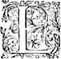
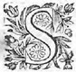

Éd.
Éd. de 1619, 323 recto sic 321 recto.

de moy ? Si vous en sçavez plus que je ne vous en ay dit, et qu'il y ait quelqu'un qui le vueille raconter, je seray bien aise de luy donner audience : mais si vous attendez quelque chose de plus de moy, je scay bien que vous vous trompez, ou pour le moins que je n'ay plus rien à vous dire. Toute la compagnie fit un esclat de rire qui ne fut pas petit pour se voir deceuë de son attente. Et Alexis prenant la parole : - Comment, mon serviteur, dit-elle, pensez-vous vous estre acquitté de la promesseη
que vous nous aviez faicte ? vous nous aviez promis de raconter vos diverses Amours, et vous n'avez parlé que des infortunes de Cryseide, et du mal-heureux Arimant :
Il me semble qu'en cecy nous ayant dit ce que vous ne nous aviez pas promis, et ayant laissé à dire ce que vous estiésestiez
" obligé de nous raconter : vous avez faictfait comme
" ceux qui aymentaiment mieux donner ce qu'ils
" ne doivent pas, que de s'acquitter de leurs debtes et obligations. Hylas oyant cettece
reproche demeura quelque temps sans rien dire, et sousrioit en soy-mesme, luy semblant lors qu'il repensoit bien à ce qu'il avoit promis, et à ce qu'il venoit de leur raconter, qu'que
Alexis avoit raison : en finenfin relevant les yeux, - Ma maistresse, luy dit-il, je voy bien maintenant que j'ay faictfait ce que vous dites, mais je trouve que la faute a esté de vostre costé : car si la monnoye que je vous ay donnee n'estoit pas bonne, pourquoy ne la refusiez vous ? Je veux dire que quand vous avez recognurecogneu que je m'en allois à l'Essor, vous m'en deviez advertir, puis que pour moy j'avouë que la
premiere fois que Cryseide me raconta ses infortunes, je pris tant de plaisir à les escouter, que je n'ay peu m'empescher de m'y plaire encores à les vous redire. - Pour le moins, interrompit Alcidon, puis que vous avez commencé l'histoire de ceste genereuse fille, vous nous la devez acheverη . - Seigneur, respondit Hylas, je vous asseure que j'ay vuidé toute ma bourse de ce costé la, c'est à dire que je n'en sçay pas d'avantage, car ç'a esté de Cryseide que je l'ay aprise, et s'en estant allee *ainsi que je vous ay dict, sans dire Adieu à personne, j'en fis de mesme, de peur que ceux qui la gardoient ne m'accusassent de fuitte, et je n'ay peu depuis seulement sçavoir en quel lieu luy et elle s'est pu retirer. - Madame, ditdict alors Florice se tournant vers Alexis, vous plaist-il d'en ouyr la fin ? - Je m'asseure, respondit leη Druyde, que vous obligerez toute la troupe, qui demeure avec impatience de sçavoir ce qui en est advenu : Aussi bien ay-je opinion qu'il nous reste encores assez de chemin assez pour vous en donner le loisir : - N'en doutez point, Madame, dict Astrée, puis que nous n'en pouvons avoir faict guere plus que la moictiémoitié , si pour le moins le sacrifice se faict comme l'on m'a asseuré, au Temple de la Deesse Astree. - Il me sera fort ayséaisé , reprit Florice, de satisfaire à la curiosité de toute ceste compagnie, puis que la mesme Cryseide a esté celle qui depuis le depart d'Hylas m'a raconté dans Lyon tout ce qu'il vous en a dict, et que j'ay à vous dire. Mais ce sera à condition, qu'Hylas satisfera mieux à sa promesse, à la premiere fois que l'occasion s'en presentera : Et
ayant asseuré qu'il le feroit, elle prit la parole de cette sorte :

luiluy sembla long plus que de coustume ; et impatiente de sçavoir ce que ce pourroit estre, elle ouvrit diverses fois ce livre, et sans se souvenir de la façon d'escrire qu'elle avoit accoustumée, elle alloit tournant les fueillets sans y rien trouver dedans qui la put contenter : ses compagnes qui la voyoient si attentive à le regarder, pensoient que ce fut un livre de Prieres, comme en effect ç's' en estoit un, et ne se prirent jamais garde de chose quelconque. Enfin sur la conclusion du sacrifice, qu'elle se recommandoit avec plus d'affection à Mercure, et à Apollon, qui est le Dieu qu'ils tiennent pour le Dieu qui revele les choses obscures, et a le don de deviner ?η Ne voila pas qu'elle se ressouvint de la façon d'escrire, qu'elle avoit autrefois euë avec le pauvre Arimant ? Et encores qu'elle creutcreust qu'il fust mort : ToutefoisToutesfois ne se pouvant imaginer aucune autre occasion qui luy eust fait donner ce livre que celle-là : elle jetta les yeux curieusement dedans, et en effect trouva qu'il y avoit quantité de lettres effacées comme elle souloit faire. Quel tressaut fut celuy qu'elle eut ? jugez-le, puis qu'elle rougit : les mains et les jambes commencerent à luy trembler, et ses compagnes estoient desja prestes à s'en retourner, qu'elle estoit encores à genoux, sans se souvenir qu'il s'en falloit aller. Personne toutefoistoutesfois n'y prit garde, car chacun pensoit que son retardement procedoit de devotion. Enfin sa compagne la tirant par la manche la fit relever, et suivre les autres qui estoient desja acheminées deux à deux, comme Hylas vous a raconté.
Elle ne fut pas plustost au logis, qu'elle s'en va dans une garde robe, tire la porte sur elle, et prend son livre en la main, commence à le remarquer curieusement, et en finenfin trouve qu'il estoit vray que l'on se servoit de la mesme façon d'escrire qu'elle avoit accoustumé avec Arimant : mais ne pensant plus qu'il futfust en vieenvie , elle creut d'abord que c'estoit Hylas, auquel elle avoit dit cét artifice, qui s'en fust voulu servir. Et parce qu'elle n'avoit point d'escritoire, ny commodité d'en avoir si promptement, elle prit un poinçon qu'elle portoit à sa coiffure, et marqua au mieux qu'elle put les lettres qu'elle trouva esparsesesparces dans le livre, qui estans rejointes ensemble formerent telles paroles :
JE vis encores, si c'est vivre que d'estre parmy leshommes, et ne vous voir point. Je l'envoye ce fidele
serviteur pour apprendre de vos nouvelles, et vous
dire des miennes. O Dieux ! conservez-la cette tant
aymée Cryseide, s'il vous plaist, qu'avec patience
tous ses autres mal-heursmalheurs soient supportez par
Arimant.
Jusques à ce dernier mot, elle ne sçavoit que penser, mais quand elle trouva le nom d'Arimant, et qu'elle cogneut qu'il estoit en vie, elle se laisse choir à genoux, joint les mains ensemble, et eslevant les yeux au Ciel : - Soyez vous à jamais loüez, ô Dieux ! dit-elle, de la grace qu'il vous plaist de me faire lors que je l'ay le moins esperée. Et puis se relevant, elle fut contrainte de s'assoir sur un lict, où elle baisa plus de cent et cent fois ce livre, s'accuseη de grande mescognoissance de n'avoir recognurecogneu celuy qui le luy a apporté, et se le refigurant, elle trouve que c'estoit le fidelle Bellaris, ce jeune homme qui avoit accoustumé de luy porter les lettres d'Arimant, et celuy qui l'estoit venu trouver, et qui la conduisit quand elle se sauva des mains de sa mere. Que pensois-je, disoit-elle en soy-mesme, et où avois-je les yeux et le jugement, puis qu'estant devant moy, et ayant ouy sa voix, je ne l'ay cognucogneu ny au visage, ny à la parole ? Seroit-il bien possible que ce fut quelqu'autre, qui sçachant l'affection que je portois à Arimant, m'ait voulu donner ces nouvelles pour se moquer de moy ? Et sur cestecette pensée demeurant grandement pensive, elle reprenoit le livre, et consideroit les effaceures des lettres, et voyant qu'elles estoient faictes comme Arimant avoit accoustumé, et mesme que là où finissoit l'effaceure, afin de ne donner point la peine de chercher plus avant, il souloit y mettre une fermesse, et l'y voyant du mesme traict dont Arimant la souloit faire, elle dit, - Non, non, ou mes yeux me trompent, ou c'est Arimant qui a marqué ces
lettres, et faitfaict ce chiffre à la fin. O Dieux ! que vous estes bons de m'avoir prolongé la vie jusquesjusqu' à ce que j'ay peu sçavoir ces bonnes nouvelles. Je vous en remercie, ô souveraine Bonté, et ne vous en demande qu'autant encores qu'il m'en peut falloir pour le voir avec ces yeux qui l'ont tant pleuré, et le baiser avec cestecette bouche, qui l'a tant et si longuement plaint. Elle eusteut continué d'avantage, si Clarine, qui quelque fortune qu'elle eust couruë, ne l'avoit jamais abandonnée, ne la fust venu appeller pour se mettre à table, où desja
toutes ses compagnes l'entendoyentattendoient .
Elle va donc à la porte, et l'ayant ouverte : - Ah ! Clarine, luy dit-elle en la baisant au front, et luy parlant tout bas, que j'ay grandes choses à te dire : Et ne pouvant luy tenir plus long discours elle passa outre, mais avec un visage si content, que chacun voyoit par le dehors la joye interieure de son ame.
Cette fille aymoit grandement Clarine, mais quand elle luy eust porté beaucoup moins de bonne volonté, elle n'eust pas laissé de disner avec impatience, et que le repas ne luy eust semblé bien long, pour le desir qu'elle
avoit de luy raconter ce que le petit livre
" luy avoit appris : car c'est la
coustume de ceux
" qui ont un grand contentement de ne penser
" pas de
l'amouravoir
entierement, s'ils ne le
" communiquent à quelque personne qu'ils estiment les aymer. D'autre costé, Clarine
pousséepressée de mesme impatience, ne vit pas plustost sa maistresse hors de table que sans se souvenir de manger, elle la suivit dans la mesme garderobbegarderobe où elle
l'avoit trouvée, et s'estans renfermées toutes deux. - O Clarine ! luy dit-elle en luy jettant les bras au col ; ô ma miemye ! que j'ay de grandes choses à te dire. SçachezSçaches ma fille, continua-t'elle, qu'Arimant est en vie. - O Dieux ! ditdict Clarine, Arimant n'est pas mort !η - Non, Clarine, reprit Cryseide, il n'est pas mort, et il m'a escrit. Clarine alors luiluy baisant une main : - O trop heureuse Cryseide, dit-elle, puis qu'en quelque estat que vous soyez, vous avez peupu apprendre ces nouvelles ! Il n'y a plus rien d'ennuyeuxenuieux, Madame, en toute vostre fortune, puis qu'Arimant est encore parmyparmi les hommes. - J'en dis autant que toy Clarine, luy dit Cryseide, et tant s'en faut, je remercie les Dieux, de tous les travaux qu'ils m'ont voulu donner, puis que je sçay que mon cher Arimant m'aydeaide àa les supporter. - Mais Madame, reprit Clarine, comment avez vous sceu ce que vous dites ? - Tien ma fille, luy respondit-elle, en luy presentant le petit livre, voila le messager des bonnes nouvelles. Clarine alors le prenant le baisa cent fois, et de pleurs de joye le moüilla de sorte, que Cryseide, - Tu me le gasteragasteras de tes larmes, Clarine, dit-elle, et il me semble qu'il le faut mieux conserver, Et cependant que Clarine le consideroit, et qu'elle alloit remarquant les effaceures, Cryseide luy raconta tout ce qui luy estoit arrivé dans le temple, et comme elle avoit mescogneu Bellaris, que toutefois elle esperoit de le revoir le lendemain quand elle y retourneroitiroit au Temple , et qu'en passant il le luy avoit ainsi asseuré : Que si de fortune elle ne pouvoit parler à luy, à cause de ses
compagnes, et de plusieurs qui avoient les yeux sur elle, - Il faut, disoit-elle, Clarine, qu'en toute façon *tu t'approches de luy, et apprensvous l'accostiez, et appreniez tout ce qui se pourra des nouvelles de mon cher Arimant, et cependant
donnedonnez
ordre d'avoir une escritoire et du papier, afin que je puisse faire responce : - Je n'y manqueray point, Madame, respondit Clarine, et croyez que ce que je ne sçauray pas, ne sera que ce qu'il ne me voudra pas dire : il me sera fort ayséaisé de parler à luy, car en ce pays on n'y regarde pas de si pres qu'au nostre, et puis j'ay tant d'envie d'en scavoir des nouvelles pour vous en redire, que je ne scay quels seroient les empeschemens assez grands pour m'en garder. Mais, Madame, ne demeurons plus longuement ensemble r'enfermées, il ne faut point donner de soupcon, autrement ceux qui ont le soing de vous, s'en pourroient prendre garde, et cela n'avanceroit point nos affaires. Cryseide alors l'embrassant, - Tu as raison, ma fille, luy dit-elle, et il faut bien avoüer, que les Dieux ne t'ont faitfaict naistre que pour ma consolation, et pour ma conduite.
A ce mot, elles sortirent de la garderobbe, et trouverent toutes ces autres Dames prisonnieres, qui demandoient desja où estoit Cryseide, car outre que c'estoit celle d'entr'elles qui tenoit le premier rang, encore se faisoit-elle tant aymer de toutes, qu'il n'y en avoit une seule qui ne l'eust voulu servir de la propre vie. Elles commencerent donc entr'elles mille sortes de petits jeux pour passer le temps, et pour enchanter les desplaisirs de leur detention, telle se pouvoit-elle
nommer, plustost que prison, parce que Gondebaut avoit commandé, que pendant son absence, elles fussent triattéestraittées
η
en sorte, que l'ennuy ne leur fit point regretter l'esloignement de leur patrie.
Ce jour sembla long à Cryseide et à Clarine, et la nuict encores d'avantage : mais le matin estant venu, *il leur sembloit
elles juroient toutes deux,
que l'on alloit au Temple plus tard que de coustume. En fin l'heure tant desirée estant venuë, elles s'y acheminerent toutes ensemble, et Dieu sçait si Cryseide avoit les yeux de tous costez pour essayer de voir Bellaris : Elle n'euteust pas plustost pris de l'eau Lustrale
en entrant dans le temple, qu'elle le vit tout aupres du Vaze, où il s'estoit expressément arresté ; pour se faire mieux voir quand elle passeroit. CriseideCryseide s'approchant tant qu'elle peut de luy, n'euteust loisir en passant que de luy dire, - Clarine me suit : Il entendit aisément qu'elle vouloit qu'il parlast à elle, et jugeant aussi que c'estoit ce qu'il pouvoit faire de mieux, pour ne point donner de soupçon ; il prit garde quand elle passa, qui fut quelque temps apres les Dames, et parce que ces filles marchoient sans ordre, il se mit dans la confusion, et s'approchant d'elle, qui l'avoit desja remarqué, il luy dit en marchant, et sans la regarder, - Où pourray-je vous voir, ouoù Madame ? - Au jardin de l'Athenée, dit-elle, si nous y allons ce soir ; Mais que fait Arimant ? - Il est, dit-il, en bonne santé. A ce mot, elle haussa les yeux au ciel, et sans avoir le loisir de luy respondre passa outre, pour ne donner soupçon à ses compagnes.
En mesme temps, Bellaris s'en va par la ville, s'enquiert discrettement où estoientestoit les jardins de l'Athenée, essaye de sçavoir à quelle heure ces belles estrangeres y alloient, et s'estant bien informé de toute chose, va trouver le Jardinier, luy donne quelque argent, et le prie de luy permettre de s'y pouvoir promener quand il voudroit. Luy qui ne refusoit cetteceste courtoisie à personne qui eust quelque peu d'apparence d'honneste homme, le luy accorda librement, et cela d'autant plus qu'il feignoit d'avoir une maladie, pour laquelle les Medecins luy ordonnoient de se promener. Ayant donc mis si bon ordre à ses affaires, il se va mettre sur le bord de l'Arar, pour voir quand elles le passeroient pour venir au jardin. Cependant Clarine aussitostaussi tost que sa maistresse fut de retour du sacrifice, ne fut paresseuse à luiluy faire entendre les discours qu'elle avoit eus avec Bellaris, et que sans doute si l'on alloit ce jour là dans les jardins de l'Athenée, elle l'y verroit : et qu'il luy avoit asseuré qu'Arimant estoit en bonne santé, n'ayant peu sçavoir de luiluy aucune autre particularité : - Je croy bien, disoit-elle, que c'est en partie à cause de l'incommodité du lieu, mais en partie aussi pour vouloir estre le premier à vous dire les bonnes nouvelles : - Dieu luy en facefasse la grace, respondit Cryseide, et je trouve que vous avez fait fort bien de luy donner le lieu des jardins de l'Athenée, parce que nous n'avons personne là qui nous empesche. Elles eussent parlé plus longuement, mais le disner qui estoit desja sur la table, leur fit couper là leur discours pour ceste heure ;
Et parce que Cryseide
desiroit avec passion de parler au fidellefidele
Bellaris, elle mit en avant durant le repas qu'il faisoit beau temps, qu'il seroit bon de s'aller promener comme de coustume, pour tromper d'autant plus l'ennuy de leurnostre detention : chacune en fut d'avis, et le faisant dire à ceux qui les avoient en garde, quelques heures apres le disner, elles y furent conduites toutes ensemble.
Soudain que Bellaris les vit entrer dans le batteau, car il ne falloit presque que passer l'Arar de leur logis pour venir à ces jardins, il gaigna le devant, et entrant dedans, fit semblant de se promenerproumener à grands pas dans une allée, qui estoit la plus prés de la porte, ayant tousjours l'œil quand elles entreroient. Lors que ces Dames s'alloient promenerproumener, Clarine ny les autres filles de chambre n'y alloient point, mais pouvoient s'en aller par la ville avec quelqu'une des gardes :
cela fut cause qu'à ce coup
Cryseide estoit seule, dés qu'elle mit le pied dans le jardin, jettant l'œil de tous costez, elle apperceutaperceut incontinent Bellaris, et luy feignant d'estre curieux de les voir s'avança jusques au milieu de l'allée à leur rencontre, et puis s'arrestant les consideroit l'une apres l'autre avec un œil de compassion, et pour se les acquerir favorablesη
, il disoit quelquefois assez haut en langage Italien : - O quelle perte a faitfaite la Gaule Cisalpine, estant despoüillée de tant de belles et vertueuses Dames ?η
mais quand Cryseide passa : - O Dieux ! s'escria-t'il, et n'est-ce pas Cryseide que je voy ? ô mere infortunée ! Et comment auras-tu supporté cette perte ? Et lors parlant
toujours Italien, et mettant un genoüil en terre devant elle : - Madame, luy dit-il tout haut, serois-je pas le plus heureux homme du monde si je pouvois vous rendre quelque service, y estant obligé de tant de sortes, que j'estimerois toute la perte que j'ay faitefaicte pour bien employée si je pouvois avoir ce seul contentement. La nourriture que j'ay euë en vostre maison, me le commandant ainsi, si je ne veux estre le plus ingrat qui vive. Cryseide qui pour estre surprise ne scavoit comme elle devoit parler, demeura un peu interdite, et cela fut cause que ceux qui les gardoient en eurent moins de soupçon. Et parce que Bellaris s'apperceutaperceut bien qu'elle estoit bien surprise, se relevant : - Et comment, Madame ? il semble, dit-il, que vous ne vous souvenez point du pauvre Bellaris, qui a esté eslevé et nourry si long temps aupres de vous, et qui ne vous eust jamais laissee, si ce vain desir de servir les hommes, parce qu'ils voyagent, et vont voir les pays estrangers, ne m'eust faitfaict suivre le noble et genereux Marciante ? - Hé ! Bellaris mon amy, s'escria Cryseide alors comme le recognoissant, et qui eust jamais pensé de te voir icy ? puis que je te tenois par delà les Pyrenees avec Marciante ton bon maistre ? Et qu'est-ce qui t'a conduit icy, et qui t'y retient ? - Jusques à cette heure, dit-il, Madame, j'ay creu que ce qui m'avoit conduit, et qui me retenoit en ce lieu, ce futfust ma mauvaise fortune : mais je dis maintenant que c'est le plus grand heur que je puisse souhaitter, ayant l'honneur de vous y voir, et de vous y offrir mon service. - Je te remercie Bellaris, dit-elle, il ne futfaut
point que nous attendions assistance que de Dieu seul, car estant entre les mains du Roy Gondebaut, qui veux-tu qui nous en puisse retirer que Dieu ? - Et pourquoy, dit-il, Madame, n'essayez vous de vous mettre à rançon ? Je m'offre de m'en aller à Eporede trouver vos parens, et y faire telle diligence que vous cognoistrez le desir que j'ay de m'acquitter en quelque chose des obligations que je vous ay. - Mon amy, respondit Cryseide, je ne refuse pas cette assistance, mais il faut attendre que le Roy soit icy, et lors nous verrons ce qui s'y pourra faire.
Toutes les Dames oyant cét homme parler Italien, s'assemblerent autour de luy, curieuses de sçavoir quel il estoit : la compagne
de Cryseide l'interrompit pour luy demander d'où il estoit. - Madame, dit-il, je suis Salassien, eslevé dans la maison de Cryseide, et qui ay tant de souvenir du bien que j'y ay receu que je voudrois au peril de la vie la pouvoir servir. J'ay esté amené en ce lieu non pas prisonnier, mais comme serviteur de Marciante
Chevalier assez recognurecogneu dans la mesme Province. Il fut pris et tué par certains voleurs aux pieds des Pirenées, qui me laisserent pour mort auprés de luy. Les Dieux m'ont voulu conserver la vie, pour rapporter à ses parens cestecette triste nouvelle, et me la faire regretter le reste de mes jours. - Donques, reprit Cryseide feignant d'en estre marrie, le pauvre Marciante est mort ? - Il l'est, Madame, respondit froidement Bellaris. - Je vous asseure, dit-elle, que je le plains, car c'estoit un Chevalier de merite. A ce mot, la pluspart des Dames
se separerent par diverses allées, laissant enfin Cryseide seule avec Bellaris, auquel soudain qu'elle vit que personne ne la pouvoit escouter. - Ah ! Bellaris mon amy, ditdict -elle d'une voix basse, dy moy sur la foy que tu dois aux Dieux, qu'est-il de mon cher Arimant et quelle a esté sa fortune ? - Madame, luy respondit-il, Arimant est en bonne santé, et n'a autre mal que de ne sçavoir point de vos nouvelles. Quant à sa fortune elle a esté assez diverse, et je ne sçay si j'auray loisir de la vous
raconter : - Je pense, dit-elle, que nous aurons assez de temps, mais quand cela ne seroit pas, il faut que tu reviennereviennes
icy une autre fois : - Madame, adjousta-t'il, je la vous
diray
en peu de paroles, et puis s'il vous plaist nous adviserons à ce que nous aurons à faire.
Sçachez donc, continua-t'il, qu'Arimant ayant esté si vilainement abandonné de ceux de la ville où nous estions, luylui
seul s'estant longuement deffendu, il fut enfin laissé pour mort, et c'est sans doute qu'il n'en fut jamais reschapér'eschapé , si me trouvant auprés de luy, je n'en eusse eu le soing auquel j'estois obligé : Mais encores que je fusse un peu blessé aussi , toutefoistoutesfois ne l'estant pas à l'égal de luy, je feignis d'estre mort, et me lassaylaissay
choir à ses pieds, car il estoit desja par terre. Les ennemis ayantavoient bien d'autres desseins que de despoüiller des morts, tout le sac de la ville estant à eux, aussi tost que nous fusmes en terre, la coururent toute et la traitterent comme vous pouvez avoir sçeu : Lors que je vis qu'il n'y avoit plus personne autour de nous, je me relevay, et banday quelques petites blesseures que j'avois, puis m'en
vins vers mon maistre, qu'avec l'aide d'un jeune homme de la ville, je portay dans une escuyerie deshabitee qui estoit là aupres, n'osant me mettre dans des maisons, à cause que tout estoit plein de soldats. J'avois encores opinion qu'il ne fustfut pas mort, me semblant que les Dieux ne permettroientpermettoient jamais qu'une personne si accomplie qu'Arimant, sortit du monde en la fleur de son aage : je visitay donc les coups qu'il avoit, et quoy que je ne m'y entende guerebeaucoup , toutefois je n'en voyois point ce me sembloit qui fussent mortels, ne scachant que faire, car il saignoitseignoit tousjours, je rompis ma chemise, en fis des bandes, et prenant de l'araigneeAreignée η , estant en lieu où il n'y en avoit pas faute, je le banday le mieux que je peus, et puis cherchant de tous costez, je trouvay un peu de vieille paille, sur laquelle je l'estendis, mettant sa teste en mon giron : Je ne vous dis pas icy, Madame, les regrets que je faisois autour de luy, et combien de pleurs je respandis dessus. En fin les Dieux voulurent qu'il revint, mais ouvrant les yeux il se trouva bien esbahy de se voir où il estoit, craignant alors que cest estonnement ne luy fit mal : Je luy dis, - Courage, Seigneur, les Dieux nous sortiront bien encores de ceste fortune : - Les Dieux, me dit-il, Bellaris, sont bons, mais ma destinee est si mauvaise, que je ne dois esperer pour mon repos que la mort. Mais, Bellaris, qu'est-il η de Cryseide ? - Cryseide, luy respondis-je est sauvee, la femmeη de ce Roy Bourguignon, qui le suit partout a fait mettre toutes les femmes dans le temple pour empescher le desordre, et particulierement lal'a retenuë aupres d'elle.
- Que les Dieux, dit-il, vueillent recognoistre envers cette Royne, cette bonne œuvre par toute sorte de bonne fortune. Je feignois, Madame, ce que je luy disois, parce qu'autrement il fust mort de desplaisir. - Mais, Seigneur, luy dis-je, ne voulez vous pas vous efforcer ? - Si feray, dit-il, car Cryseide estant hors de danger, il n'y a plus rien dequoy je me soucie. Alors quoy qu'avec un peu de difficulté, je le mis sur ses pieds : mais à peine estions nous debout, que nous ouysmes quantité de gens de guerre qui se disputoyentdisputoient à la porte de cette Escuyerie, et peu apres mettant l'espee en la main, commencerent de se battre entr'eux, c'estoit à cause du butin qu'ils avoient faictfait , et qu'ils vouloient separer. La dissension fut telle, qu'il y en demeura plusieurs de morts, et comme le bruit alloit croissant, plusieurs autres s'y assemblerent, qui aussi-tost arrivez se mettoient de l'un des partyspartis . Enfin un Capitaine passant par là, et voyant ce desordre y voulut mettre ordreaccourir : mais les soldats qui pensoient que ce fut pour leur oster leur butin, au lieu de luy obeyr se jetterent sur luy, et le presserent de sorte qu'il fut contraint de se sauver dans la porte de l'Escuyerie où nous estions. Les soldats qui avoient perdu le respect, et qui sçavoient bien, que s'il leur eschapoit des mains, il les feroit punir et passer par les armes, se resolurent de le faire mourir, esperant encores d'avoir par apres ce qu'il pourroit avoir desja gaigné au pillage de la ville, et en ce dessein s'essayoient d'entrer dedans. Ce que considerant Arimant, - Defendons,
dit-il, ce Chef, le Ciel peut-estre nous l'a envoyé, afin qu'ayant esté assisté de nous, nous en recevions apres quelque courtoisie. A ce mot mettant tous deux la main aux espees, nous nous mismes à ses costez : et quoy que mon maistre fust fort blessé, si est-ce que son courage qui n'a jamais deffailly, luy donna assez de force pour retenir la furie des soldats : peut-estre y fussions nous en fin demeurez. Mais comme si le Ciel nous eust voulu seulement donner le loisir d'obliger cét homme, quelque temps apres il survint des amis de celuy que nous defendions, qui le secoururent de sorte, que de ces tumultueux, les uns furent tuez, les autres pris, et le reste s'enfuit.
Ce Capitaine, se voyant hors d'un si grand danger, remercia ses amis, mais ne cognoissant point Arimant, - Chevalier, dit-il, duquel la valeur m'a aujourd'huy conservé la vie : voyez quel service vous voulez de moy, en eschange de l'assistance que j'ay receuë de vous, car ce sera chose bien difficile, si je ne m'essaye de le faire. Mon maistre luy respondit-il
en
langageη
Gaulois : - J'estois obligé à ce que j'ay faictfait , mais si c'est chose qui vous ait esté agreable, je ne vous demande sinon que vous me receviez pour vostre prisonnier, et que vous me traittiez en Chevalier tel que vous estes et que je suis. Ce Capitaine alors le considerant de plus prez, et voyant à la difference de ses habits, qu'il n'estoit pas Bourguignon, luy dit : - Je vous reçoy, Chevalier, comme vous desirez, non pas pour vous traiter en prisonnier, mais en amy, et en
Chevalier qui le merite, et vous donne ma parole, que je mourray plustost, que vous receviez quelque desplaisir de nostre armee.
Voilà donc Arimant et moy avec ce capitaine, qui s'appelloit BellimartBelliman
η
,
homme à la verité de grand credit, mais grandement sujet au bien, ainsi qu'il nous le fit paroistre bien tost, et suivant la coustume des Vissigots,
" se souvenant fort peu des bien-faictsη
,
parce qu'il estoit Vissigot,
" encores qu'il suivit Gondebaut Roy des Bourguignons, comme personne qui cherchoit la fortune
partout où il esperoit de la trouver. Pour le premier jour, nous receusmes tous les bons traitemens qui se pouvoient attendre en semblable occasion : mais le lendemain ayant esté informé par quelques uns de la ville, de la qualité du prisonnier qu'il avoit, il commença de le tenir sous meilleure garde, et feignant que ce fut afin de le faire guerir plus promptement, luy dit, qu'il ne falloit point sortir de la chambre, *
deffendant que personne parlast à nous, et puis voyant que l'armee devoit partir, et ne scachant où elle alloit, il eut peur de le perdre, c'est pourquoy le soir il tira mon maistre à part, et luiluy dit que pour s'acquitteracquiter de la parole qu'il luy avoit donnee, il estoit contraint de luiluy faire passer les Alpes, parce que le Roy ayant esté informé que luiluy seul avoit esmeu toute la ville, et avoit esté cause que plusieurs des siens estoient morts, il le faisoit chercher par toute l'armée, desirant de le faire mourir pour
mettre
terreur aux autres villes voisines : Que contre toute autre il pourroit peut-estre resister, mais qu'à
l'autoritéauthorité du Roy, il estoit impossible : Que de le faire sauver, et l'envoyer libre parmy les siens, il le voudroit bien, si c'estoit chose qu'il osast faire si promptement, mais que plusieurs sçavoient qu'il estoit entre ses mains, et qu'il yroit de sa vie, si l'on estoit advertiadverty qu'il l'eust relasché sans le consentement du Roy, et qu'au contraire il ne pouvoit point estre blasmé de luy faire passer les Alpes, puis qu'il avoit esté permis à tous ceux de l'armee d'envoyer chez eux et les prisonniers et le butin. Mais qu'aussi tostaussitost que l'armee seroit retournée en Bourgongne,
il le r'envoyeroit à Eporedes, ou en quelque autre lieu qu'il voudroitvoulut aller. Arimant alors luy demanda si la Royne envoyoit aussi ses prisonnieres : - Nous n'avons point icy de Royne, respondit-il, mais l'on envoye aussi toutes les prisonnieres, afin de descharger l'armée : mon maistre me regarda, comme disant que je l'avois trompé, et puis continua : - J'iray, dit-il, par tout où vous voudrez, m'asseurant qu'un Chevalier si courtois et accomply ne me fera point autre traitementtraittement que celuy qui se doit à une personne de ma qualité, et qu'on peut attendre d'un Chevalier tel que vous estes.
Ainsi dés le lendemain de grand matin, *
non pas sans grand danger de la vie de mon maistre, ny sans une tres grande incommodité, à cause de ses blesseures, nous fusmes emmenez avec un convoy pour la garde de plusieurs autres prisonniers, sans que nous pussions sçavoir de vos nouvelles, sinon que le Roy avoit faictfait mettre toutes les Dames ensemble, afin qu'il ne leur
fut point faictfait d'outrage.
Apres avoir passé les Alpes, on nous emmena en ceste ville, et soudain apres, estans separez de tous les autres, l'on nous passa par le pays des Segusiens, par les monts des Gebennes, et enfin l'on nous r'enferma dans un petit chasteau aupres de la ville de Gergovie. Je puis bien dire qu'on nous r'enferma, car veritablement nous fusmes tenus si estroictement, par celuy qui nous avoit en garde, qu'à peine voyons nous le jour : nous demeurasmes qu'elquequelque
temps de ceste sorte. EnfinEn fin le merite et la douce conversation de mon maistre, renditη
ce barbareη
plus doux, et depuis les offres que je luy fis, de recognoistre sa courtoisie, quand Bellimart luy donneroit liberté, futη
cause qu'il permit que je sortisse pour en venir traitter avec luy, ayant esté adverty que Gondebaut revenoit avec toute son armée. Voila quelle a esté la fortune de mon maistre, en laquelle il n'a jamais rien tant regretté, ny ressenty si vivement, que de ne sçavoir l'estat de la vostre, seulement il apprit aux marques, que quelques autres prisonniers luy donnerent en passant par les Allobroges, que vous estiez entre les mains du Roy : Ce n'a donc point esté le desir de sortir, ny de traitter avec Bellimart, qui m'a fait venir icy, mais pour sçavoir en quel lieu du monde vous estes, et si vous avez encores memoire de luy.
- Comment, reprit incontinent Cryseide, si j'ay encores memoire de luy ? Et quelle autre memoire pense-t'il que je puisse avoir, si je n'ay la sienne ? Ouy, Bellaris, je l'ay de telle sorte, que la mort peut bien m'oster la vie, mais non pas le
souvenir d'Arimant : Et les Dieux sçavent, qu'il n'y a jour, heure ny moment, que Clarine et moy n'en parlions, quand nous sommes ensemble, sans que jamais nous ayons peu faire ce discours ; sans nous noyer le visage de larmes. Or, mon cher amy, je te veux bien declarer une chose, de laquelle je n'ay fait encores semblant à personne : Mais l'estat auquel je me treuve, et celuy que je prevois estre bien tost pire, me contraignent à t'en parler, afin que par ton conseil nous y cherchions quelque remede. Sçache, Bellaris, que ce Roy Gondebaut, duquel tu as tant ouy parler, par malheur est devenu amoureux de moy, et ne croy point que ce soit une opinion mal fondée : car outre les cognoissances qu'il en a données à chacun par ses deportemens, encores a-t'il voulu que je les aye receuës de sa bouche : Je ne voulus pas rejetter son amitiéη d'abord, sçachant assez combien une amour outragée porte une personne à de violentes actions : mais apres l'avoir remercié de l'honneur qu'il me faisoit, je luy dis, qu'il devoit considerer que je n'estois pas née dans le milieu du peuple, mais de l'une des meilleures familles des Salasses, et telle que la femme de Rithimer qui estoit sœur de l'Empereur Anthemius estoit ma proche parente ; que ceste consideration devoit estre cause que je fusse traittée selon ma qualité, et que par ce moyen il se pourroit non seulement acquerir Rithimer pour son amy, mais Anthemius mesme *qui estoit mon alliépour son parent . A ces paroles, il ne me respondit autre chose, sinon, que je luy avois faictfait plaisir de me declarer
pour telle que j'estois, et qu'estant de retour, il me feroit paroistre l'estat qu'il faisoit de mon merite et de mon alliance. Or Bellaris, je prevois maintenant un dur combat, car l'on m'a dit que le Roy revient, et je voy que de tous costez on se prepare pour luy faire entree, mesmes qu'hier, je sçeus qu'il ne tarderoit pas *quatre ou cinqdeux ou trois jours à estre icy : peut-estre aura-t'il bien passé sa fantaisiefantasie et aura changé d'affection envers moy, mais peut-estre aussi l'aura-t'il continuée : si cela est, tu peux penser de quelle façon il me persecutera, de l'espouser j'ayme mieux la mort, de le refuser, c'est un jeune homme arrogant, et enflé de présomptionpresumption pour tant et tant de victoires obtenuës, malaisement pourroit-il supporter que tant d'hommes ne luy ayans pupeu resister, une fille le puisse faire, si bien que je ne prevoy pour moy que beaucoup de mal, si tu ne me conseilles en ceste necessité. Bellaris demeura quelque temps sans luy respondre : en fin il luy dit : - Veritablement, Madame, ces considerations que vous faites sont pleines et de raison et d'affection envers mon maistre, et faut avoüer qu'il vous a une obligation tres-grande de mespriser ce Roy pour luy conserver Cryseide, et cela sera cause que pour ne manquer à ce que je vous dois à tous deux, j'exposeray librement la vie, pour essayer de vous remettre ensemble. Dites moy, Madame, vous tient-on fort resserrées ? - Tu le vois, luy dit Cryseide. - Si l'on vous traitte ailleurs comme icy, reprit-il, vous pouvez aisément vous sauver : - Mais, respondit-elle, encores que je me sauvasse, où pourrois-je aller ?
car de passer les Alpes sans estre reprise, il est impossible. - Ne vous mettez point en peine, dit-il, pourveu que vous puissiez sortir de cestecette ville, je sçay un lieu où je vous mettray, attendant que je fasse sortir Arimant du lieu où il est par un moyen que j'ay pensé, et quand vous serez tous deux ensemble, je m'asseure que les moyens ne manqueront point pour passer en Italie. - O mon amy, s'escria-t'elle, si tu pouvois faire ce que tu dis, quelle seroit l'obligation que je t'aurois ? J'ay pensé, continua-t'elle, que si tu me fais venir un batteau sur l'Arar, au droit de nos fenestres la nuict, parce qu'elles ne sont guereguiere hautes, j'y pourray descendre pourveupour peu que tu me tendes la main. - Je le feray bien, dit-il, mais comment passerons nous les chaisnes qui sont tenduës au sortir de la ville dans la mesme riviere ? - Mon amy, repliqua-t'elle, Dieu nous aydera, et si tu veux y travailler, je m'asseure que tu en trouveras bien le moyen : caret je me souviens d'avoir ouy dire, que d'autresη s'y sont sauvez : mais il faut avoir des chevaux pour Clarine, pour toy, et pour moy, et c'est ce que je vois de plus difficile, car en qui te pourras-tu fier pour les tenir ? - N'en soyez en peine, respondit- il, je les feray tenir à tel, qui ne sçaura pourquoy il le faict :fait mais le grand empeschement, c'est que je n'ay pas dequoy acheter les chevaux, ny avoir le batteau, et pour vous faire faire des habits comme ceux des femmes de cette contrée : car les soldats m'ont pris tout ce que j'avois, et à mon maistre aussi. - Ne te soucie point de cela, dictdit Cryseide, j'ay encores quantité de bagues :
et s'en tirant une du doigt, luy donna un diamant de valeur. - Va, dit-elle amy, vends-la, et si celle là ne suffit, je t'en donneray d'autres.
Mais il ne sert à rien de raconter par le menu toutes ces particularitez, Bellaris faict faire les habits, achete les chevaux, trouve le bateau, et le tout avec une si grande diligence, que deux jours apres tout fut reduit en estat tel qu'on eust sceu desirer. Cependant il avoit remarqué le lieu où il falloit passer, et où les chevaux les attenderoient :attendroient et parce que la chaisne estoit soustenuë sur des batteaux, qui de tant en tant
y estoient attachez à travers la riviere, une nuict auparavant il y alla travailler de sorte, que destachant à moitié l'un des batteaux, il ne tenoit qu'à fort peu de certains anneaux, au travers desquels les chaisnes passoient.
Toute chose estant ainsi, Cryseide ayant pris l'heure, ne manqua point de sortir hors du lict, feignant de vouloir aller à la garderobbegarderobe, afin que sa compagne avec laquelle elle couchoit, ne s'en prit garde : mais d'autant que c'estoit sur le premier sommeilη
, elle se rendormit aussi tost presque qu'elle fut esveillée, si bien que Cryseide et Clarine n'ayant mis qu'un cottillon sur elles, furent incontinent descenduës et sans bruit dans le bateau, et soudain le poussant au milieu de l'eau, Bellaris qui estoit seul pour conducteur, le laissa emporter au courant de la riviere sans ramer, et la fortune fut si bonne pour luy, qu'encores qu'un bon battelier eust esté assez empesché la nuict de rencontrer si justement le bateaubatteau qui estoit a demy destaché, toutefois il n'y manqua
point, et saultant dessus avec des tenailles et le moins de bruit qu'il peutput , *
de peur que les gardes ne l'ouyssent, acheva d'en destacherdétacher les anneaux, et apres fit couler le batteau par dessous la chaine, qui n'estant plus soustenuë, de sa pesanteur s'enfonça si avant dans l'eau, qu'elle donna passage au batteau de Cryseide, qui n'estant guereguiere chargé passa aisément dessus, et de cette sorte sortit hors de l'enclos de la ville : mais incontinent apres il faillit de se perdre : car le Rosne dans lequel l'Arar entre, est si impetueux, qu'il esmeut des vagues assez fascheuses pour les petits batteaux, et d'autant plus y ayant un si mauvais battelier, toutefoistoutesfois enfin il s'efforça tant qu'il gagnagaigna la rive, et quoy que ce fut beaucoup plus bas qu'il n'avoit pensé, si est-ce qu'à la luëur de la Lune qui s'estoit levée assez claire, *
cependant qu'il travailloit contre la roideur du fleuve, il trouva le lieu où il avoit fait tenir ses chevaux par un jeune garcon, qui mesme luy avoit promis de luy servir de guide, tant le desir du gain a du pouvoir sur les personnes de basse qualité. Cependant que l'on accommodoit les chevaux, Cryseide et Clarine prirent leurs habits nouveaux, et desquels elles s'accommoderent assez mal, tant pour la haste qu'elles avoient, que pour estre à l'obscur, et qu'elles y estoient mal accoustumées. Enfin estans vestuës bien ou mal, elles monterent à cheval, et passerent par cette contrée des Segusiens, conduisant tousjours leur guide avec elles pour la crainte qu'elles avoient qu'il ne les descouvrit. Et apres avoir passé avec beaucoup de peine les Montsle Mont
Cemmenes, marchant plus de nuict que de jour, et repaissant presque toujours dans les bois, dont le pays est assez abondant, ils parvindrent aupres de la ville de Gergovie, dans laquelle Cryseide ne fit point de difficulté d'aller loger, parce que c'estoit de la denomination d'EuricEurich Roy des Vissigots. Elle se loge donc dans une hostellerie, et le fidellefidele
Bellaris dés le lendemain va trouver Arimant, à qui les jours sembloient fort longs, encores qu'il n'eust jamais pensé recevoir si promptement de si bonnes nouvelles. Cryseide avoit donné une bague de prix à Bellaris, afin que s'il estoit necessaire de corrompre celuy qui gardoit Arimant, il le pust faire en la luy donnant, *
et luy en promettant encore d'avantage.
Soudain qu'Arimant l'apperçeut, car ce fut le Capitaine du chasteau qui le luy conduisit : - Et bien, mon amyami ,
que m'apportes-tu, la mort ou la vie ? - Seigneur, luy respondit-il tout haut, Je ne vous apporte point de mauvaises nouvelles, sinon que le Roy Gondebaut n'estant point arrivé, le vaillant Bellimart n'est non plus de retour, si bien que mon voyage a esté en vain. J'ay trouvé l'un de vos parens qui s'est fort enquis de vos nouvelles, et qui vous offre toute sorte d'assistance aupres du Roy et de Bellimart, s'asseurant qu'il n'y sera pas sans faveur. Du reste mon voyage a esté inutile, et je croy qu'il faudra que j'y retourne bien tost, parce qu'on y attend le Roy de jour en jour. - Tu m'eusses fait plaisir, dit Arimant, de l'attendre, et non pas de revenir avec si peu de contentement pour moy. - Seigneur, respondit-il, j'ay eu peur que mon sejour ne vous fust
ennuyeux, et aussi que vous ayant laissé sans personne pour vous servir, j'ay pensé bien faire de ne demeurer pas d'avantage inutilement. Le Capitaine alors prenant la parole, - Il ne faut point luy dit-il, vous fascher, car ce qui ne s'est pu faire à ce coup, il s'acheveraη
à un autre voyage, et je croy selon les nouvelles que nous en avons, que si le Roy n'est arrivé à
cette
ceste heure, il ne peut guere retarder.
Mais soudain que ce Capitaine les eusteut laissez seuls, Bellaris met un genouïl en terre, prend la main de son maistre et la luy baise, et avec un visage riant, - Seigneur, luy dit-il, vous estes mal satisfaictsatisfait de mon voyage, mais quelle seroit la meilleure nouvelle que je vous pourrois donner ? - Que Cryseide, respondit le Chevalier, se portast bien en sa prison, et qu'elle m'aymast tousjours : - Et si je la vous
donne meilleure, repliqua Bellaris, serez vous content de moy :η
- Et qu'est-ce, dit le Chevalier en sousriant, que tu peux me dire de plus ? - Je vous diray, reprit-il, que non seulement Cryseide se porte bien, et qu'elle vous aime plus que jamais, mais de plus, qu'elle est en liberté, et encores d'avantage, qu'elle vous est venuë trouver, et qu'elle est avec Clarine dans Gergovie, qui vous attend : - Ah ! Bellaris, me dis-tu la verité ? s'escria le Chevalier : - Pensez-vous, respondit le fidele serviteur, que je voulusse mentirη
? - Il faut bien, dit-il lors haussant les yeux au ciel et joignant les mains ; Il faut bien, ô Dieux ! que vous ayez eu agreables les vœux et les supplications de mon pere, puis qu'il vous plaist de me faire une si grande grace. Et puis se tournantη
à
Bellaris, - Mais, amyami , est-il possible que cela soit et comment tant de bon-heur me peut-il estre arrivé tout à la fois ? - Seigneur, luy respondit-il, ne doutezdoubtez point de ce que je vous ay dit, et pour vous tesmoigner et mon affection et ma fidelité, si vous voulez demain vous la verrez cestecette belle qui a tant pris de peine pour vous donner ce contentement, mais je crains fort que ce soit le dernier service que je vous rendray jamais : - Je ne voudrois pas, adjousta Arimant, acheterachepter ce contentement avec ta perte, mais s'il se pouvoit autrement, j'en serois bien ayseaise . - Je vous diray, adjousta-t'il, ce que j'ay deliberé, et lors il commença à luy raconter de quelle façon il avoit trouvé Cryseide dans le temple, comme il avoit parlé à Clarine, et apres tout ce qui s'estoit passé entre Cryseide et luy dans le jardin, la resolution qu'elle avoit faitefaicte de se sauver, et bref, tout ce qui s'en estoit ensuivy, et enfin comme elle estoit à Gergovie vestuë à la Gauloise, où elle l'attendoit. Et puis il continua, - Or, Seigneur, il faut vous haster de sortir d'icy, car sans doute le Roy Gondebaut doit estre de retour à l'heure que nous parlons, et vous devez croire que Bellimart ne tardera guere ou à venir, ou à vous envoyer querir, puis que son avarice est telle, qu'elle ne le laissera guere en repos, et Dieu sçait quel traittementtraitement il vous fera, si vous avez memoire de l'ingratitude dont il a usé envers vous, vous cognoistrez aysémentaisément qu'il ne faut pas esperer plus de courtoisie à l'adveniravenir , que vous en avez épreuvéespreuvé par le passé. Outre qu'il est impossible que Cryseide demeure long temps où elle
est, que le Roy Gondebaut n'en soit adverty, et il faut que vous sçachiez, que ce Roy est devenu tellement amoureux d'elle, qu'il a monstré avoir intentionη de l'espouser. Jugez maintenant s'il n'est pas bien necessaire d'user de diligence pour la retirer hors de ces contrées, et quelle doit estre l'affection que Cryseide vous porte, puis qu'elle a mieux ayméaimé se mettre au hazard que je vous ay dit, que d'estre Royne en espousant un si grand Roy ? J'ay donc pensé que vous pourrez faire de cetteceste sorte : Il faut que dés ce soir vous priez le Capitaine de me laisser retourner vers Bellimart, monstrant d'estre mal satisfait de moy, pour m'en estre revenu sans attendre son retour, il le fera fort aisément et demain ainsi que les portes s'ouvriront, vous prendrez mes habits, et je demeureray en vostre place dans le lict : J'espere que les Dieux favoriseront nostre entreprise, et qu'ils la feront reüssir heureusement : - Mais, mon Dieu ! Bellaris, dit Arimant, je crains que ces gens ne te fassent du mal, s'il se pouvoit prendre par une autre voye, je croy qu'elle seroit bien plus à propos : - Non, non, Seigneur, dit le fidellefidele Bellaris, il n'y en a point, car en premier lieu le temps vous presse, et ne faut pas avoir opinion que par presens on puisse corrompre cet homme qui vous garde, parce qu'il croit vostre rançon devoir estre tres-grande, et il y a apparence que Bellimart luy en aura promis une partie : et quant à ce qui est de moy, ne vous en souciez point, d'autant que je sçay asseurément que les Dieux aident de faveurs inesperées ceux qui esperentη en eux, et
font leur devoir envers leurs maistres. Et y a-t'il rien à quoy je sois plus obligé qu'à vous servir en tout ce qui me sera possible, et particulierement en une affaire de telle importance ? Mais soit ainsi que la cruauté de ce barbare luy fasse user autrement envers moy qu'il ne devroit, faut-il pour quelque danger qui se presente, que je laisse de vous servir ? Et si je meurs, qu'est-ce autre chose que faire un peu plustost, ce qu'en fin il faut que je fasse ? Et puis-je finir mes jours pour un plus beau, ny pour un plus honorable subject, qu'en vous donnant la liberté et le contentement ? Au contraire, si je ne le faisois pas, quelle reproche ne me ferois-je tout le reste de ma vie, d'avoir perdu une si belle occasion, de vous tesmoigner ce que je vous suis ? Ne me ravissez point cetteceste gloire, Seigneur, je vous supplie, je vous lala vous demande, en recompense de tous les services que je vous ay rendus, et seulement je vous requiers de trois choses : L'une, si je meurs, que vous vous souveniez, que vous n'aurez jamais un plus fidele serviteur : L'autre, si je vis, que vous me donnerez Clarine pour ma femme : Et la derniere, qu'en toute façon, lors que vous serez sorty d'icy, vous vous retiriez en toute diligence, afin que vous ne soyez pas repris tous deux une seconde fois. Et continuant son discours, il sceut de telle sorte persuader Arimant, qu'il ne put jamais refuser cette assistance, quoy qu'il eust un grand regret de le laisser en un si grand peril. Le soir donc, Arimant pria le Capitaine, ainsi que Bellaris avoit proposé, qui sçachant bien que le Roy, s'il n'estoit arrivé
ne tarderoit pas d'estre à Lyon, et desireux d'avoir plus promptement la rançon à laquelle il se mettroit, et dont il devoit recevoir une bonne partie, non seulement le premierpermit ,
mais luy conseilla de le devoir faire, et que luy-mesme l'accompagneroit d'une de ses lettres à Bellimart.
Le depart de Bellaris estant donc resolu de ceste sorte, luy mesme fut celuy qui solicita la lettre pour partir, disoit-il plus matin, et revenir tant plustost, et l'ayant retirée dés le soir, et fait commander à la porte qu'on le laissast sortir le lendemain, aussi tost qu'elle seroit ouverte ; Il revint vers Arimant, et l'informa bien de tout ce qu'il avoit à faire, à sçavoir où il trouvera Cryseide, en quel lieu sont les chevaux, et par quel chemin il doit passer, tant pour aller jusques aupres de Lyon, que pour se retirer de làdelà les Alpes, luy conseillant de se mettre sur le Rosne au dessous de Vienne, et prendre la mer vers les Massiliens, jusques en la coste de la Ligurie : qu'il valoit mieux allongeralonger son chemin, et le faire un peu plus seurement. Avec de semblables discours, ils passerent une partie de la nuict, et l'autre fut employée à changer d'habits, et à donner ordre à tout ce qui estoit necessaire, de sorte que le jour estant venu, et oyant ouvrir les portes, apres qu'Arimant eut embrassé cent fois ce fidele serviteur, et non point sans avoir les larmes aux yeux, se recommandant à Mercure, il se mit en chemin, promettant à Bellaris qu'il auroit bien tost de ses nouvelles, et que quand il devroit employer tout ce qu'il avoit, il le mettroit hors de la peine où il le laissoit maintenant,
et avec un extreme regret, il se presenta pour sortir avec une grande crainte d'estre recogneu à la porte, parce qu'encor qu'il eust les habits de Bellaris, il luy ressembloit fort mal, estant beaucoup plus grand, et ayant le visage si dissemblable, qu'il estoit impossible de prendre l'un pour l'autre, pour peu qu'on y prit garde : toutesfois il sortit sans difficulté, parce qu'il estoit encores fort matin, et qu'ayant eu le commandement de le laisser sortir, ils n'y regarderent pas de plus prés. Or Bellaris
*
par la fenestre de la chambre,
l'accompagna de l'œil jusques à ce qu'il le vit fort avant dans la plaine, et il
remarqua bien qu'Arimant tournoit à tous coups les yeux du costé du chasteau pour voir si l'on le suivoit. En finEnfin l'ayant perdu de veuë, ce fut alors que le danger où il s'estoit mis luy revint devant les yeux, et luy representa vivement l'horreur de la mort, si est-ce que de quelque costé qu'il la peustpust considerer, il luy fustfut impossible de regretter ce qu'il avoit faictfait , ny d'en estre marry : et toutesfois
" comme chacun s'essaye de prolonger sa vie
" le plus qu'il luy est possible, voyant que
" son maistre estoit sauvé, il se resolut d'essayer d'en faire de mesme : il tourne donc les chausses d'Arimant à la renverse, et le pourpoinct aussi, accommode son chapeau le plus ressemblant qu'il peut, à celuy qu'il souloit avoir, et de fortune trouve encores son propre manteau qu'Arimant à son depart avoit oublié, ou peut-estre laissé expres pour mieux marcher à pied : bref, il s'ageance le mieux qu'il peut, et avec un visage asseuré se presente à la porte pour sortir : le
portier *Sergent qui y commandoit
la luy refuse, disant, qu'il en estestoit desja sorty un, et qu'il n'avoit commandement que pour celuy-là : mais Bellaris monstrant la lettre qui s'adressoit à Bellimart, et la main du Capitaine estant recognuë par tous ceux qui estoient à la porte, ils furent d'avis de le laisser sortir : Le Sergentportier seul qui estoit opiniastre, et qui desiroit de faire sa charge exactement, ne le voulut faire sans un autre commandement ; et ainsi remettant Bellaris entre les mains d'un soldat, luy ordonna de le mener vers le Capitaine, et sçavoir de luy sa volonté. Le soldat n'y manqua point, mais parce qu'il estoit encores matin, et que Bellaris et le soldat disputant à la porte de la chambre du Capitaine, l'esveillerent, il se mit en si grande colere contre le Sergentportier , qu'il le menaça de le faire chastier, pour luy apprendre de laisser sortir ceux qui portoyentportoient lettre de luy : et tournant la teste de l'autre costé du lict, il se rendormit d'aussi bon sommeil qu'il avoit fait de toute la nuict.
Ainsi Bellaris sortit du chasteau, et prenant le chemin de Gergovie, usa de si grande diligence qu'il sembloit qu'il eust des aislesη
aux pieds : mais cependant son maistre estant arrivé avant que luy, et trouvant l'hostellerie, il alla frapper à la porte de la chambre de Cryseide, qui ne dormant que d'un fort leger sommeil, l'ouitoüyt incontinent, et appella Clarine pour sçavoir que c'estoit : elle qui d'autre costé vivoit avec une grande peine, se jetta à bas du lict, mettant sa robe sur ses espaules, courut ouvrir la porte du commencement,
n'ayant pas encore les yeux bien ouverts : - Tu sois le bien venu, Bellaris, luy dit-elle, nous t'avons longuement attendu. Et Cryseide impatiente luy demandant qui c'estoit, - C'est, dit-il, Madame, Bellaris qui veut entrer, - Et laissez-le venir vistement, dit Cryseide, peut estre nous apportera-t'il quelques bonnes nouvelles. - Ouy, Madame, dit Arimant, je vous en apporte de fort bonnes. Cryseide oyant, et recognoissant ceste voix, - Mon Dieu, dictdit -elle en sursaut, et se relevant sur le lict, c'est là la voix d'Arimant ! Et tirant le rideau, elle le vit qu'il s'estoit desja mis àa genoux au chevet de son lict. Jugez, Madameη , quelle surprise fut celle-là, et quel excez de contentement ?η Ilη fut bien tel, que luy jettant les bras au col, et joignant sa bouche à la sienne, elle y demeura si longuement qu'il sembloit qu'elle eut perdu le souvenir de s'en oster : Quant au Chevalier, il estoit si plein de joye de voir sa chere Cryseide entre ses bras, qu'il la serroit de sorte contre son estomac, qu'il sembloit qu'il la voulust estouffer. Clarine ayant refermé la porte y estoit accouruë, et les regardant et considerant ensemble demeuroit immobile, si ravie d'admiration, qu'elle ne sçavoit si c'estoit songe ou verité. Et apres avoir demeuré quelque temps de cestecette sorte, elle alla ouvrir les fenestres, et puis s'en revint vers eux, qu'elle trouva encores embrassez et ravis. Alors craignant presque qu'ils ne mourussent d'aise, les esveillant elle les contraignit de reprendre haleine, et de se separer pour quelque temps : mais incontinent apres se reprenant, ils ne pouvoient
se saouler de se baiser et de se caresser, et c'est sans doute qu'ils n'eussent pas finy si promptement, n'eust esté qu'ils ouyrent hurter à la porte de la chambre. Clarine les en advertit, qui ne fut pas un petit trouble et pour l'un et pour l'autre, ne se pouvans imaginer que quelqu'un qui ne fustfut pour leur nuire vint à ces heures les trouver. Arimant se releva, et mettant la main sur son espée, s'en va à la porte pour l'ouvrir : ce fut bien la plus grande surprise pour le Chevalier qu'il eust encore euë, car il se vit Bellaris au devant lorsqu'il l'esperoit et qu'il y pensoit le moins. - O Dieux !Dieu s'escria-t'il, est-ce bien toy mon amy ? - C'est moy, dit-il, Seigneur, moy dis-je, que les Dieux ont voulu delivrer, afin que je vous puissepusse rendre encore quelque bon service. - O Dieux ! dit le Chevalier, vueillez par vostre bonté moderer ces bon-heursbonheurs par quelque legere fortune, car en voicy trois trop grands pour estre continuez : Voir Cryseide en liberté, en bonne santé, et entre mes mains : Me voir sorty de prison : et enfinen fin te pouvoir embrasser, mon amy lors que je pensois t'avoir perdu pour si long temps. A ce mot, le prenant par la main, il le mena vers Cryseide, et luy raconta ce qu'il avoit fait pour le sauver, et l'extreme peril où il s'estoit mis : Et lors qu'elle et le Chevalier vouloient entrer sur les remerciemens, il les interrompit, disant, - Laissons ces paroles, Seigneur, je suis plus obligé de vous servir, que je ne le pourray jamais faire, et ne perdez point le temps qui vous doit estre si cher. Je crains que l'on ne vous suive, sortons de cette ville, et faisons chemin à
loisir, je pourray vous raconter comme je suis eschappéeschapé .
Cryseide jugeant qu'il disoit vray, s'habilla en si grande diligence, que les chevaux à peine furent prests, qu'elle estoit desja au bas de l'escalier pour faire
voyage : Arimant la mit à cheval, et Bellaris
Clarine : et apres avoir bien contenté leur hoste, Arimant prit le cheval de son fidele Bellaris, et ainsi se mettent en chemin avec leur guide, qui
desja s'estoit grandement affectionné à Cryseide, tant pour sa douceur naturelle, qui la faisoit aimeraymer de tous ceux qui la voyoient, que pour la liberalité dont elle usoit envers luy. Au sortir de Gergovie, ils marcherent assez viste, mais s'estans un peu esloignez, ils allerent plus lentement à cause de Bellaris qui estoit à pied, et qui par les chemins leur alloit racontant le moyen par lequel il s'estoit eschapé, non pas sans les faire rire de l'extreme frayeur qu'il avoit euë, quand le Sergentportier luy refusa deη
sortir, et de quelle diligence il avoit marché lors qu'il ne fut plus à la veuë du chasteau.
Ils finirent de cette sorte la premiere journée avec tous les plaisirs, que des personnes ayans eu semblables fortunes pouvoient recevoir, les ayant eschappeeseschapées
et s'estans levez de grand matin passerent les grandes montagnes de CemmenesCammenes, et sur la fin de la journée, l'espouvantable Selve qui se nomme le Bois-noir, et arriverent fort tard à ViverosViveres, fuyant tant qu'il leur estoit possible les grandes villes et les grands chemins, afin de decevoir ceux qui peut-estre les suivoient. Mais il leur advint comme à ceux
qui pensantpensans eviter l'embuscheη laissent leur droit chemin pour donner dedans : Car le Capitaine qui avoit en garde Arimant, lors qu'il fut adverty qu'il estoit sauvé, prenant avec luy sept ou huict des siens, se resolut de les suivre, et au pis aller d'en donner luy-mesme les nouvelles à Bellimart : parce qu'il creut que sans doute ils iroient à LionLyon, ou pour s'embarquer, ou pour prendre le chemin des Helveces. Et parce qu'ils sçavoient comme personnes du payspaïs , les sentiers plus courts, ils les avoient devancez, et ce soir estoient desja logez dans le mesme logis où Arimant et sa trouppetroupe s'alloient reposer. Le Capitaine recogneut incontinent Bellaris, et s'asseurant qu'ils estoient ensemble, il advertit *toustoutes ses gens pour le surprendre au mesme temps qu'il mettroit pied à terreη : mais ils ne le purent faire si secretementsecrettement , que Bellaris qui marchoit tousjours avec soupcon, ne se prit garde de leurs mouvemens, et parce qu'il avoit tousjours accoustumé d'aller devant chercher le logis, et puis s'en retournoitalloit querir son maistre : Apres avoir parlé à l'hoste, et sçeudit qu'il y avoit assez de la place : - Je m'en vay donc, dit-il tout haut, faire venir mon maistre et sa troupe. Le Capitaine qui estoit dans une chambre voisine, tout prest à se saisir de luy, l'oyant ainsi parler, ne se voulut descouvrir, pensant les prendre tous deux en un coup : Mais le prudent Bellaris revenant vers son maistre, - Seigneur, luy dit il, sauvons nous, le Capitaine nous attend en ce logis. Arimant fut grandement surpris, toutesfois considerant le peu de temps qu'il avoit à prendre
party, il fut d'avis que Cryseide et Clarine s'y en allassent loger, avec lela guide, et trouvassent quelque excuse de leur voyage, et que le lendemain elles prinssent le chemin de Vienne, et luy aussi, et que pour sçavoir par où ils passeroient, ils mettroientη des brisées par tous les carrefours qu'ils rencontreroient, et que celuy qui arriveroit le premier à Vienne, iroit loger de l'autre costé du Rosne, au logis le plus proche du Pont, et y attendroit les autres. Ils vouloient dire d'avantage, mais il leur sembla d'ouyr des chevaux qui venoient le long du pavé, qui fut cause que Cryseide poussa son cheval avec Clarine, et la guide d'un costé, et Arimant de l'autre avec son fidele serviteur. Le Chevalier à la faveur de la nuict et des grands bois se sauva aysément, quoy que le Capitaine le cherchast plus de quatre ou cinq heures dans les bois, et le troisiesme jour arriva dans Vienne à bonne heure, et s'alla loger en une hosteleriehostellerie qui estoit au bout du Pont. Le soir s'enquerant des nouvelles, il sceut de son hoste que le Roy Gondebaut estoit enfin revenu de la Gaule Cisalpine, chargé de victoires et de despoüilles, mais qu'à son retour il avoit receu un signalé desplaisir, à cause d'une prisonniere Italienne, de laquelle il devoit estre grandement amoureux, et qui s'estoit sauvée, sans que quelque diligence qu'on y eust sçeu mettre, on eust jamais pu sçavoir qu'elle estoit devenuë. - Et pour tesmoignage de ce que je dis, continua l'hoste, l'on a faitfaict publier aujourd'huy une declaration du Roy pour ce subjectsujet , que je vous veux faire voir, et se faisant apporter
un grand papier en façon de placard η , il leut qu'il estoit tel,
ATOUS
ceux à qui nostre present vouloir sera cogneu, Salut : D'autant qu'il n'y a rien qui offence plus un courage "
genereux, ny
qui luy donne un plus juste desir de "
vengeance que l'ingratitude, "
et la trahison : et qu'à nostre grand regret, au retour de nos longs, glorieux, et perilleux voyages, nous avons esté advertis, que Cryseide, l'une de nos prisonnieres, et celle à qui nostre bonté s'estoit pleuë de faire plus de graces et de faveurs, s'estoit ingratement sauvee de nos gardes : Ce qu'elle n'auroit pu faire sans le conseil, et l'assistance de quelque personne à nous
peu affectionnee, et qui perfidement l'auroit enlevee, au mespris de nostre puissance et authorité Royale. A ces causes, et plusieurs autres à ce nous mouvant,
et par l'advis de nostre Conseil, pour chastier telles ingratitudes et trahysons : Avons declaré, juré, et promis, Par le Grandη
que nous adorons, par l'ame de nostre tres-honoré pere, et par la Majesté de nostre Couronne, Que quiconque nous fera r'avoir ceste ingrate Cryseide, nostre fuitive prisonniere : ou qui nous declarera celuy qui a esté cause de sa fuite, ou qui perfidement a tenu main, donné ayde, ou faveur à la
faire evader, de quelque qualité, gent, ou condition qu'il soit, Nous luy ferons telle grace qu'il nous voudra demander, sans que pour quelque sujectsujet que ce puisse estre, nous contrevenions, ou promettionspermettions
jamais estre contrevenu à nostre parole, promesse, et serment. Si ordonnons à tous nos ComtesContes
et Officiers, de faire publier cesdites lettres, par toute l'estenduë de nos Estats. Donné en nostre Royale ville de
Lyon, aux Ides de Julius,
Et de nostre regneη
le deuxiesme.
Arimant oyant lire cestecette declaration entra en grande peur que Cryseide ne fust recognuë en entrant dans la ville, mesme que l'hoste en continuant son discours luy dit, que le Roy avoit mandé par tous les passages des ponts, des ports, et des entrées des villes, des personnes qui la recognoissoient. Cela fut cause que quelque temps apres il tira Bellaris à part, et luy commanda de chercher en diligence des habits d'homme pour la desguiser, et Clarine aussi : et soudain qu'il les auroit recouvrez, qu'il s'en allast sur le chemin par lequel elles devoient venir, pour les en avertir et les faire habiller avant que d'entrer dans la ville. Le fidele serviteur aussi tost qu'il fut jour ne manqua point à ce qu'il luy
avoit ordonné, et ayant trouvé assez promptement ce qui luy estoit necessaire, s'alla mettre sur le chemin pour les attendre. Cependant
Ce pendant qu'Arimant faisant venir quelques habits plus honnestes
que ceux qu'il avoit de Bellaris, se vestit un peu plus proprement qu'il n'estoit pas : mais la Fortune qui n'estoit point encore lasse de travailler ces genereux Amans, et qui vouloit encores de plus grandes preuves de leur amour et de leur courage, ordonna, qu'à l'heure mesme que Bellaris avoit rencontré Cryseide, et qu'elle remercioit les Dieux de ce qu'Arimant estoit arrivé sans aucun mal dans Vienne, le Roy Gondebaut allant à la chasse, et picquantpiquant apres un cerfη
, vint passer auprés d'elle avec cinq ou six seulement qui le suivoient, et parce qu'il pristprit garde qu'au mesme temps qu'elle l'avoit aperceu, elle s'estoit retirée dans un buisson voisin, et s'estoit esloignée du chemin, il la suivit par curiosité : mais Bellaris le recognoissant d'abord, se jetta à corps perdu dans un vallon, ce que Cryseide ne peut faire ny Clarine aussi pour estre à cheval, de sorte que le Roy l'ayant attainte, et la voyant vestuë à la Gauloise, creut au commencement, que ce fust quelqu'une du pays, qui pour estre seule cese
fust retirée du grand chemin : mais luy ayant demandé qu'qui elle estoit, et où elle alloit, aussi-tost qu'elle ouvrit la bouche, il la recogneut, parce qu'encores qu'elle parlast assez bien la langue Gauloise, elle avoit toutefois quelques accents estrangers, et la regardant de plus prés, quoy qu'elle essayast de se cacher le visage : - O Dieux, dit-il, et voicy Cryseide :
Et lors se jettant en terre, il courut vers elle l'embrasser et la caresser. - Et depuis quand, belle Dame, continua-t'il, avez-vous pris cét habit qui vous déguise si fort, et quel Dieu vous a remis en mes mains, desquelles pour m'affliger quelque meschant Demon vous avoit enlevée ? La pauvre Cryseide estonéeestonnée plus qu'il ne se peut croire, de se voir en la puissance de celuy qu'elle avoit tant redouté, et tombée d'un si haut degré de contentement en si grand et cuisant ennuy demeura quelque temps sans respondre : En fin voyant qu'il n'y avoit plus de moyen de se celer, elle se resolut tout à coup, et d'un courage extreme, elle respondit, - Vous me demandez, Seigneur, depuis quand j'ay pris cét habit, sçachez que c'est depuis que l'Amour me l'a commandé : Et parce que vous appellez meschant Demon le Dieu favorable qui m'avoit osté de vos mains, c'est luy que je reclame, tant pour conserver son honneur, que pour vous faire recognoistre le tort qu'un si grand Roy se faict de contrevenir non seulement aux loix de l'humanité, mais à celles de l'Ordre de Chevalerie que vous portezη , qui vous commande de servir, assister, et honorer les Dames, et non pas les prendre prisonnieres, et les retenir contre leur gré. Le Roy oyant ces libres paroles de Cryseide, et l'amour qu'il luy portoit, ne voulant consentir qu'il fitfist ce qu'il cognoissoit estre du devoir de Chevalier, il luy respondit : - Si quelqu'un vous vouloit faire outrage, j'y mettrois et ma Couronne et ma vie pour vous en empescher : mais en cecy, tant s'en faut que je vous retienne
pour vostre mal, qu'au contraire je pretenspretends que ce soit à vostre avantage et de tous les vostres. Elle vouloit repliquer, mais le Roy qui estoit plein de contentement d'une si heureuse rencontre, et qui ne vouloit point entrer plus avant en ce discours, la prenant par les rennes de son cheval, la reconduisit jusques au grand chemin, où ayant repris son cheval, il retourna à mesme temps à Lyon, plus content de cette prise, qu'il n'avoit esté de toutes ses victoires passées : Et parce qu'il l'avoit faitefaicte à la chasse, et qu'il en estoit plus amoureux qu'il n'avoit jamais esté, il en fit de tels vers, que depuis il faisoit souvent chanter par ceux de sa Musique.
JE m'en vay nuict et jour
A la chasse d'Amour :
Mais chasse bien estrange
Qui me deçoit et change
En ce que je poursuis :
Puis qu'ayant bien chassé, l'Amour veut que je soye
Blessé, non le blesseur. Chasseur non, mais la proye.
Lors que Cryseide fut prise, Clarine se fust bien sauvée si elle eust voulu aussi bien que celuy qui leur servoit de guide : mais ne la voulant abandonner, elle la suivit volontairement : Et de cette sorte la triste Cryseide fut r'amenée à Lyon, et remise avec les autres Dames prisonnieres, mais avec une plus soigneuse garde qu'elle n'avoit pas eu auparavant ; quoy que le Roy qui veritablement avoit dessein de l'espouser, tant pour sa beauté que pour estre proche parente de la femme de Rithimer sœur de l'Empereur Anthemius, eust commandé qu'elle ne receust que toute sorte de service et de courtoisie, et le contentement qu'il receut de l'avoirlavoir trouvée fut tel, qu'il en fit faire des feux de joye et des resjouyssances si grandes que chacun s'en estonnoit. Cependant Bellaris s'estant sauvé à moitié deschiré des ronces, et cassé en plusieurs lieux des diverses cheutes qu'il avoit faitces, s'en vint tout effroyé donner ces mauvaises nouvelles à son maistre, qui demeura si surprinssurpris d'estonnement, et si outré de douleur, qu'il ne sçeut jamais luy dire une seule parole, mais s'abouchant sur un lict, y demeura jusques à la nuict, sans qu'il voulut jamais respondre à Bellaris, quelque parole de consolation qu'il luy peutput dire, apresEnfin s'estant deshabillé, il se mit dans le lict sans vouloir manger où il reposa fort peu pour toute la nuict. Enfin le matin
il appella Bellaris, et luy commanda de s'en aller à Lyon, et de sçavoir des nouvelles de Cryseide, et du traittement qu'on luy faisoit. Le fidellefidele serviteur, quoy qu'il y eust beaucoup de danger pour luy, se desguisantdéguisant le mieux qu'il put, ne manqua point d'obeyr à ce qu'il luy avoit commandé, et d'abord qu'il fut arrivé, il n'eusteut pas beaucoup de peine de s'en enquerir, parce que toute la ville estoit pleine de Cryseide, et des faveurs que le Roy luy faisoit, estans telles, que l'on croyoit asseurément qu'il l'espouseroit, quoy qu'elle en fit beaucoup de difficulté, pour quelque occasion que l'on ne sçavoit point encores. Il revint incontinent vers son maistre, voyant mesme la grande difficulté qu'il y avoit de parler à elle, resolu de le persuader de se retirer en Italie, puis qu'il n'y avoit pas apparence que se voyant servie, caressée, et honorée d'un si grand Roy : l'ambition d'estre Royne, ne luy fit perdre l'amour d'Arimant. Estant donc retourné à Vienne, il luy raconte tout ce qu'il avoit appris, et apres luy remet devant les yeux, la legereté des femmes, leur ambition, la douce flatterieflaterie d'estre Royne, et la grande apparence qu'il y avoit qu'elle recevroit l'honneur que le Roy luy vouloit faire. Qu'il le conseilloit de ne s'y point amuser d'avantage, et de se souvenir de l'ennuy que son pere auroit de sa perte, et que cela pourroit estre cause de sa mort, et de l'entiere ruine de sa maison, que de sejourner là d'avantage, il n'y avoit point de seureté, parce que ce jeune homme
qui les avoit servy de guide, les pourroit deceler et faire reprendre. Bref que pour toutes raisons il devoit se promptement retirer en sa maison, cependant qu'il le pouvoit faire. Arimant escouta Bellaris tant qu'il voulut parler, non pas pour consentir à son opinion, mais parce qu'il avoit l'esprit ailleurs. Et lors qu'il se fut teu : - Bellaris, luy respondit-il, je ne m'esloignerayeslongneray guerre de ton advis, pourveu que tu fasses encores ce que je te diray. Retourne incontinent à Lyon, donne ce petit livre à Cryseide, et fay en sorte que tu en ayes responce, et apres tu verras quelle resolution je feray. Le serviteur qui aymoit son maistre infiniment, apres l'avoir asseuré de le faire, ou d'y perdre la vie, le supplia de ne vouloir donc point se tant attrister, et de se souvenir que sa vertu l'avoit bien fait surmonter de plus grandes infortunes, et qu'il en devoit esperer encores autant, sans se donner entierement à la douleur. Et Arimant le luy ayant promis, il partit incontinent avec le petit livre, dans lequel le Chevalier avoit marqué telles parollesparoles :
CEste infortune aura t'elle plus de pouvoir sur vous que toutes les autres ? Et pour l'ambition d'estre Royne, serez vous infidele ?infidelle Et moy, seray-je le plus trahy, et le plus mal heureux de tous les hommes ? Mandez-le moy, afin que par ma mort, je vous empesche d'estre parjure.
Bellaris ne pouvant trouver autre moyen de donner ce livre à Cryseide, que quand elle alloit au Temple, se tint auprés du Vaze de l'eau Lustrale, comme il avoit fait l'autre fois, et en mesme temps qu'elle tendit la main pour en prendre, il fit semblant de luy en vouloir donner, et de l'autre main luiluy presenta le livre, qu'elle recogneut incontinent, et s'approchant le plus pres de luy qu'elle put, le prit si finement, que personne ne s'en apperceut, et ne luy peutput dire que ce mot : - A demain. Cependant, sortant du Temple, il s'en alla comme de coustume parmy la ville, où il apprit que veritablement le
Roy vouloit espouser Cryseide, qu'elle l'avoit refusé, et ne vouloit point y consentir,
que toutefois il ne vouloit laisser de passer outre, s'asseurant, que quand il l'auroit espousee, elle changeroit d'opinion.
Le lendemain, Cryseide ne manqua point de rendre le livre, avec la mesme ruze à Bellaris, et luy dit en passant : - Je mourray plustost. Il entendit bien ce qu'elle vouloit dire, et admirant l'amour et la generosité de ceste fille, s'en retourna vers son maistre, auquel il fit entendre ce qu'il avoit appris, et les mesmes paroles qu'elle luy avoit dites, en luy donnant le livre, qui fut une si grande consolation pour Arimant, qu'il sembloit d'
estre à moitié soulagé de sa peine : Et puis prenant le livre, il adjousta les lettres qui se trouverent estre telles :
VOus sçaurez plustost ma mort, que mon changement. Ace coup je feray voir quelle resolution peut avoir
une fille, qui vive ou morte ne sera jamais qu'à
vous. Faites-en de mesme.
- Et bien, dit alors Arimant, me peuxpeus -tu conseiller,
Bellaris, d'abandonner une personne, qui prend une telle resolution pour moy ? - J'avoüe, respondit-il, que je l'admire, et que sa vertu a surpassé mon opinion : Mais, Seigneur, que pretendez vous de faire, et quel moyen vous reste-t'il de la pouvoir secourir ? la force de ce Roy est trop grande, et son Amour trop violente, pour donner place à quelque espoir, et le danger est si grand pour vous de vous arrester icy, que je vous tiens pour perdu si vous le faitesfaictes . - Ne te soucie, Bellaris, dit alors Arimant, j'ay pensé
un moyen pour la sauver, qui me reüssira sans doute. Et dés lors mettant ordre à son depart, il s'en alla le lendemain à Lyon, où il arriva expressément sur le soir, et s'en alla loger en une hostellerie la plus retiree qu'il peutput
choisir. Et là par le moyen de Bellaris, il apprit encores la continuation des mesmes nouvelles, et de plus, que le lendemain le Roy s'en alloit faire un sacrifice au tombeauη
des deux Amants, en esperance qu'ils luy seroient propices envers le grand Tautates,
pour changer le cœur de Cryseide, et la faire consentir à ce qu'il desiroit. Et que pour le rendre plus solemnel, il vouloit qu'elle y assistast, et toutes les autres Dames prisonnieres.
Arimant fut fort ayseaise de cestecette nouvelle, et luy sembla que c'estoit un bon augure pour luy, qu'il se fust rencontré à cetteceste
occasion : Il ne manqua donc point de se tenir prest le lendemain. Et cependant le Roy ne cessoit de rechercher cette belle fille, luy representant tout ce qui pouvoit la persuader de luy complaire. Mais elle plus ferme en sa resolution, qu'un rocherη
contre les flots de la mer,
ne put jamais estre esbranlée. Cela fut cause qu'il pensa avant que de venir à la force, de recourre au secours de Tharamis, et par sacrifices obtenir de luy cette grace, de changer le cœur de cette genereuse fille. Et parce qu'il la pria d'y vouloir assister, elle y consentit librement, - M'asseurant, dit-elle, que si ce Dieu Tharamis est juste, il vous ostera la volonté de faire une si grande injustice.
Le lendemain le sacrifice estant prest à se faire, il la fit monter dans un somptueux Chariot, la contraignit de porter la couronne Royale, et la fit suivre pompeusement par toutes les autres ses compagnes, comme si desja elle eust esté Royne des Bourguignons, pensant avec telles grandeurs esbranler sa constance : elle estoit veritablement tresbelletres-belle , mais cetteceste parure ne donnoit pas un petit esclat à sa beauté, encores que le desplaisir qu'elle avoit en son ame, parust et en son visage et en toutes ses actions. Le Roy estoit aupres d'elle si content de la voir avec cetteceste couronne, qu'il luy sembloit qu'elle fustfut desja sa femme : Ils passerent tout le long de la ville, et vindrent jusques à Pierre-Cyse, où estoit la sepultureη
des deux Amants, et où le sacrifice se devoit faire.
Lors qu'il arriva, les Gardes firent faire place au Roy, et Cryseide et toutes les autres Dames mirent pied à terre pour monter dans l'eschaffautéchaffaut
qui leur estoit preparé, pour mieux voir les ceremonies. Soudain les sacrificateurs arrivent, les Victimaires conduisent les Taureauxη
blancs, et les Vacies s'approchant le plus pres
qu'ils purent du tombeau, font signe de donner le coup aux victimes, elles tombent du premier coup en terre du costé droit, et soudain leur mettant le cousteaucouteau dans le gosier, en tirent le sang, duquel ils arrousent le feu, qui estoit allumé pres du tombeauη des deux Amants, puis le tombeau mesme, et en fin le Roy, les Dames, et le reste du peuple. Apres les Victimes sont ouvertes, les entrailles recherchées, et trouvées bien entieres, et telles que tous les presagesη en estoient tres-heureux, dequoy le Roy tres-aise, et le disant à Cryseide, pour tesmoignage que les Dieux avoient agreable leur alliance. Elle qui jusqu'alors avoit esperé en la justice de ce Dieu incogneuη , et qu'il donneroit cognoissance en quelque sorte du contraire, se voyant frustrée de son attente, ne sçavoit plus à quoy recourre sinon au desespoir. Et en cetteceste resolution, elle feignit de vouloir elle mesme recognoistre les entrailles des Victimes, et demanda qu'on luy permit de s'en approcher. Le Roy qui estoit tres-asseuré du rapport des Vacies, en fut tres-aise, pensant que cetteceste veuë ne pouvoit que luy persuader ce qu'il desiroit, par la cognoissance qu'elle auroit de la volonté des Dieux : Et ainsi luy faisant aider à descendre, elle vint sur le lieu du sacrifice, se fit monstrer curieusement le foye, le cœur, et le reste des parties nobles. Et cependant que les Sacrificateurs s'amusoient à les luy faire bien voir, elle se saisit du couteauη encores sanglant, duquel on avoit esgorgéégorgé les Victimes, et puis s'encourant
vers le tombeauη
des deux Amants, se prit à l'un des coingsη
, et lors haussant le couteau avec un visage tres-asseuré, elle dit fort haut, - Voy-tu, Magnanimeη
Prince, ce couteau que je tiens en la main ? C'est pour me le mettre dans le cœur, si quelqu'un se hazarde de me vouloir user de forceη
: Et lors tournant la poincte contre son estomac, elle continua de cetteceste sorte :
- Dieu me soit tesmoing, Grand et invincible Roy, si je n'estime et n'admireη
tout ce qui est en ta personne, et tout ce qui procede de toy ; je te voy chery et favorisé des Dieux, ayméaimé de tes subjectssujets , honoré de tes voisins, et redouté de tes ennemis : je recognois en toy une prudence en toutes tes actions, une generosité en toutes tes entreprises, une justice envers
*
pour
chacun, et une amour particuliere envers moy, qui m'oblige non seulement à t'admirer et à te servir, comme le reste de l'Univers, mais à t'aymeraimer et estimer autant qu'il m'est possible : si donc ayant la cognoissance de toutes ces choses, et celle aussi de l'honneur qu'il te plaist de me faire, de m'unir à ta majesté par les liens d'un desirable
*
avantageux
mariage,
ne faut-il pas confesser que ce qui m'en oste la volonté doit avoir une grande puissance et sur mon affection et sur mon devoir ? S'il te plaist donc, Seigneur, avoir cette consideration devant les yeux, je veux esperer que non seulement tu me pardonneras si je fais quelque chose qui te desplaise, avec cetteceste asseurance, que si je pouvois autrement disposer de moy, je le ferois à ton contentement
encore plus promptement que tu ne me le sçaurois commander.
Mais sçache, ô Grand Roy, qu'estant à peine sortie de l'enfance, les Dieux voulurent que j'aimasseaymasse un Chevalier, je dis que les Dieux le voulurent, car si ce n'eust esté par le vouloir des Dieux, et qu'ils ne l'eussent escrit dans l'ordre infaillible du destin, c'est sans doute qu'il y auroit long temps que cestecette affection seroit perie, pour les grandes et incroyables traverses que la Fortune
nous a données : Au commencement les parens qui avoient puissance sur nous : Depuis
Rithimer que tu sçais estre si puissant, et enfinen fin tes armes, qui non seulement m'osterent la liberté, mais m'arracherent je puis dire d'entre les bras de mon marymari , tel puis-je nommer celuy auquel j'ay promis mariage, prenant la Nopciere
Juno, et Hymen pour tesmoings de nos promesses reciproques, et pour justes punisseurs de celuy qui manqueroit à ces serments. Que si je ments en ce que je dis, je prie ces deux fideles Amants qui reposent en ce tombeauη
, et desquels les ames jouyssent avec les Dieux du loyer de leur fidele amitié, qu'ils me punissent plus rigoureusement qu'autre que la Justice divine ait jamais chastiée : mais aussi si je dis vray, je les conjure par cestecette inviolable amour qu'ils se sont portee, de vouloir monstrer en toy leur puissance, en obtenant des Dieux, qu'ils te changent le courage, et te divertissent ailleurs la pensée : Et toy, ô grand et genereux Prince ! sois certain qu'il ne te reste plus sur moy que la force, à laquelle si tu en veux user, ce que je ne
croy point de ta magnanimitéη
, je m'y opposeray avec ce couteau duquel je chasseray cette ame de mon corps, et ne laisseray en ta puissance que ce cadavere
froid et sans vie. Mais s'il est vray que tu me fasses l'honneur de m'aymer, et que tu sois encores ce grand Roy, qui as faict trembler l'Italie au bruit de tes armes, je dis cette Italie, qui autrefois a sousmis tout l'Univers sous les siennes : fay le voir aujourd'huy en me rendant non seulement la liberté, mais me redonnant à celuy à qui je suis, et duquel je ne puis estre separée que par la mort, tu acquerras ainsi le nom de juste, en rendant possesseur de son bien, celuy qui en a esté despoüillé injustement, et le tiltre de Magnanimeη
, en te surmontant toy-mesme, toy dis-je, qui jusques icy as esté invincible : si tu ne le fais, attends, ô Roy, la vengeance asseurée des Dieux, qui te regardent à cette heure du Ciel, pour voir comme tu te comporteras en cetteceste action, pour luy donner ou chastiment ou loyer. Et vous continua-t'elle, se tournant contre le tombeauη
ô parfaictes ames, qui avez ressenty cependant que vous viviez peut-estre les mesmes infortunes qui me travaillent, compatissez à mon mal, et ne permettez point qu'aujourd'huy devant une si solemnelle assemblee, j'embrasse en vain vostre tombeauη
, et que je vous reclame sans secours.
Ainsi acheva Cryseide, et embrassant de nouveau le coinη
de la sepulture, elle tenoit de l'autre main le couteau contre son estomach, prest à s'en donner dans le cœur, si elle voyoit
que quelqu'un la voulust arracher de là. Toute l'assemblee demeura infiniment estonnee, oyant et voyant la resolution de cette fille : mais sur tous le Roy se trouva confus de cet accident, parce qu'il estoit vray que ce sepulchreη
des deux Amants estoit un Asyle pour tous ceux qui s'y retiroient, et qui
recevoient
outrage en ce qui estoit de l'amour, et si religieusement observé, que le pere ny la mere mesme n'en pouvoient retirer leurs enfans, quand ils en tenoient l'un des coinsη
. Le Roy qui n'euteust jamais imaginé que Cryseide s'en fut voulu servir, ny seulement pour estre estrangere, qu'elle le sceust, n'y avoit point pensé : mais la voyant en cet estat, il ne sçavoit à quoy se resoudre, de laisser cestecette fille en liberté, il ne le vouloit point, de rompre les privileges de cet Asyle, il ne l'osoit, fust qu'il craignit le chastiment des Dieux, ou qu'il redoutast le tumulte du peuple : enfin ayant quelque temps consideré et debattu en soy mesme, il se resolut de la ravir de là, sans avoir esgard n'yny
au lieu ny à l'assemblee, s'asseurant sur les forces qui estoient autour de luy, qu'il contiendroit le peuple en son devoir, et que pour ce qui estoit des Dieux, il les adouciroit par des sacrifices,
et par toute sorte de *devoirsbien-faits .
En cette deliberation, il s'avança pour l'aller prendre luy-mesme, et elle le voyant venir, se fust donné à l'heure mesme du couteau dans le sein, si tous les Vacies en s'eslevant
ne se fussent opposez au Roy, luy remonstrant ce qui estoit de leurs franchises, lesquelles ne pouvoient estre violees par un Prince si juste et craignant
les Dieux : Mais son amour qui estoit encores plus forte que toutes ces considerations, l'eust sans doute porté outre son devoir, si Arimant qui s'estoit trouvé à ce spectacle, et qui ne pouvoit presque contenir les larmes de compassion de
voir Cryseide en cestecette extremité, fendant la presse en despit des gardes ne se fut jettése jetta entre Cryseide et le Roy, et lors mettant un genoüil à terre, ne luy eust dit : - Seigneur dit-il je me viens presenter à ta Majesté, asseuré sur tala promesse que tu as faite, et de laquelle je te fais voir l'escriture
et sur ton serment, et desquels je te fais voir l'escriture, dit-il luy monstrant sa declaration qu'il avoit en
la main, pour recevoir la grace que tu as promise à celuy qui te dira qui fut cause que cetteceste genereuse fille, (dit-il en monstrant Cryseide
)
η
s'eschappa de tes gardes. - Estranger, dit le Roy, qui estoit tout troublé
, je n'ay jamais rien promis que je ne tienne, declare le coulpable, afin que je le fasse punir, et demande la grace, afin que tu l'obtiennes. - Seigneur dit alors Arimant en se relevant, le coulpable est icy en ta presence, et tu pourras aisement le chastier, car c'est moy. - C'est trop, reprit incontinent le Roy, et comment as-tu la hardiesse de te presenter devant *mes yeuxmoy ? - Pour la seule esperance, dit-il, de la grace que je te veux demander, et ne croy point, Seigneur, que ce soit ny ma vie, ny l'amoindrissement de quelque peine que je te veuxvueille
requerir, mais seulement qu'en observant ta parole à laquelle tu es obligé par le Grandη
que tu adores, par l'ame de ton pereη
de glorieuse memoire, et par la Majesté de ta Couronne, tu m'octroyes une autre grace que je te demanderay. Le Roy demeura
estonné de la resolution de cét homme, et s'estant reculé un pas ou deux : - Estranger, luy dit-il, n'es-tu point hors du sens de parler de cette sorte ? ou comment peux-tu avoir esté la cause que Cryseide se soit sauvee ? - Seigneur, repliqua-t'il, je m'appelle Arimant, et suis cet heureux Chevalier que cette belle fille a ditdict avoir tant aimé et aymeraimer encores : je fus pris quand elle fut faitefaicte prisonniere : et ma fortune fut en cela telle, que je fus conduit prisonnier auprés de la ville de Gergovie, où je trouvay le moyen de luy faire sçavoir de mes nouvelles : Elle qui pensoit que je fusse mort, soudain qu'elle sçeut que j'estois en vie, delibera de se sauver, et de me venir aiderayder à sortir du lieu où j'estois detenu, elle executa sa deliberation, et fut depuis cause de me mettre en liberté : Tu vois donc, Seigneur, que veritablement je suis cause qu'elle s'est sauvée, et que me declarant à toy, tu es obligé pour n'estre parjure, de m'accorder la grace que tu m'as promise : Le Roy d'un costé estonné de cestecette resolution : De l'autre offencé, en ce qu'il luy sembloit d'estre mesprisé par cét estranger : - Ouy, dit-il, est ilil est vray, je te dois faire la grace, demande-lalà et te prepare au supplice de ma juste indignation. - Seigneur, reprit alors Arimant, je n'ay jamais moins esperé d'un si grand Roy que tu es, c'est pourquoy librement je me remets entre tes mains, sans craindre ny tes supplices, ny tes tourmentstourmens , pourveu qu'auparavant je voye effectuer la grace que je te demande. - Or sus, dit le Roy, demande hardiment, je te promets de
te l'accorder, par les mesmes sermentssermens ausquels je me suis desja obligé. - Seigneur, repliqua alors Arimant d'une voix plus haute, je te demande en grace que Cryseide que je vois là embrasser le tombeauη des deux Amants, et qui maintenant est ta prisonniere, soit remise en liberté, et renvoiéerenvoyée par toy en toute asseurance à ses parens, sans que ny toy, ny autre quelconque luylui puisse faire force, ny la retenir contre sa volonté. - O Dieux ! s'escria le Roy, quelle malheureuse journee est celle-cy pour moy ?η Faut-il donc que moy mesme je sois cause de mon mal, et que pour l'avoir imprudemment promis je doive estre parjure, ou vivre le plus miserable Prince de l'Univers ? Et là demeurant quelque temps sans parler, enfin enflamé d'extreme colere, et ayant honte qu'en la presence de tout le peuple, on le peustpust accuser d'avoir rompu sa foy : Il resolut de la maintenir, mais de saouler son courroux sur Arimant. Et pource les yeux enflamez de furie, - Je declare, dit-il, que Cryseide est libre, et deffends sur peine de ma disgrace, qu'il y ait personne si hardie de luy faire desplaisir : Jurant sur l'ame de mon pereη , que le premier qui y contreviendra, n'aura jamais ny grace, ny pardon de moy. Et lors se tournant vers Arimant : - Et bien estranger, es-tu content de moy ? - Ouy, Seigneur, dit-il, plus qu'homme du monde. Alors se tournant vers ses Solduriers, - Prenez-le, dit-il, ce hardy mespriseur de mon courroux, et qu'on le mette aux supplicesau supplice , jusques à ce qu'il meure, afin que les autres temeraires comme luy, apprennent à son exemple, à redouter les traicts
de mon ire. Arimant alors d'un visage joyeux tendit les bras aux liens, et seulement se tournant vers Cryseide qu'il vit pleurer : - Ne troublez point, Madame, je vous supplie, luy dit-il, le repos de mon ame par vos pleurs, et croyez que mes jours ne sçauroient jamais estre mieux employez, qu'en donnant à vous la liberté, et vous aux vostresη . Cryseide alors se jettant en terre, - O libertéη ! s'escria-tellet'elle , trop cherement venduë, pourquoy ne puis-je avec une eternelle prison te conserver la vie, que ton affection te faitfaict perdre au plus beau de ton aage ? mais va seulement, Arimant, je te suivray bien tost, et puis que je suis en liberté, je feray cognoistre que je sçay aussi bien mourir pour te suivre, que toy pour me sauver l'honneur. Cependant qu'elle parloit ainsi, et qu'Arimant la conjuroit par leur amour, de vivre autant qu'il plairoit aux Dieux de prolonger ses jours, on achevoit de luylui lier les bras avec de cruelles chaisnes. Et le peuple esmeu de la constance du Chevalier, et de la compassion de Cryseide, souspiroit et pleuroit la separation d'une si belle amitié. Lors que Bellimart se trouvant avec le Roy en ce sacrifice, et oyant parler Arimant, le recognut pour son prisonnier, et de mesme aussi le Capitaine qui l'estoit venu advertir qu'il s'estoit eschapé : Et voyant que si Gondebaut le faisoit mourir il perdroit toute esperance de rançon, il s'avança, et dit au Roy, Que ce n'estoit pas pour contrevenir à sa volonté, parce que tout ce qu'il avoit, estoit en la disposition de sa Majesté, mais seulement pour ne laisser perdre son droitdroict sans le
luy representer : qu'il le supplioit de surseoir l'execution de mort contre cét estranger, jusques à ce qu'il luy pust faire entendre la raison qu'il avoit de s'en plaindre. Et le Roy luy ayant permis, il luy representa la peine qu'il avoit euë, et les hazards qu'il avoit encourus en ses perilleux voyages aupres de sa personne, le faitfaict souvenir des lieux où il a esté employé, et des services plus signalez qu'il luy a rendus, raconte les blesseuresblessures honorables qu'il en a rapportees, et en finenfin de toutes ces choses, luiluy dit-il, Seigneur, je n'en ay eu autre advantage que ce seul estranger, lequel estant mon prisonnier, et s'estant sauvé je retrouve icy : mais si l'arrest de sa mort s'en ensuit, je perds tout ce que la fortune m'avoit donné, et ne pense pas, Seigneur, que ce soit peu de chose : car il est le premier de la Province des Libicins, et son pere qui n'a que ce seul enfant, est tellement eslevé en credit, qu'il n'y a que luy seul en toute la Gaule Cisalpine, de qui ce grand soldat Rithimer ait quelque apprehension. A peine eut-il achevé ces paroles, que Bellaris le fidele serviteur, ne sçachant quel estoit le dessein de son maistre, et accourant en ce lieu comme presque tout le reste du peuple de la ville, et ayant esté informé de ce qu'il avoit faitfaict pour sauver Cryseide, esmeu d'une affection extreme de retirersauver encores son maistre de ce peril, par la perte de sa propre vie, se vint jetter aux pieds de Gondebaut, si inopinément qu'il l'empescha de respondre à Bellimart, pour ouyr ce que ce jeune homme luy vouloit representer, et lors qu'il vit que le Roy l'escoutoit, Il commença de cette sorte :
- Seigneur, qui t'es aujourd'huy acquis le tiltre du Prince de la foy, par l'acte que toute cestecette grande assemblée t'a veu faire en cestecette occasion : Je me jette à tes genoux, pour te supplier de n'estre moins observateur de ta parole envers moy, que tu l'as esté envers ce Chevalier, dit-il monstrant Arimant. - Estranger, dit Gondebaut, ny toy ny personne vivante, ne me reprochera jamais, que je contrevienne à ce que je promets. - Seigneur, reprit Bellaris, ainsi puissent les Deux augmenter ta couronne comme cestecette action te rend digne d'estre Monarque de toute la terre. Et lors se relevant, il continua ainsi : - Tu as promis, ô grand Roy ! de donner une grace à celuy qui te diroit qui a aidé, ou qui a tenu la main à faire sauver ceste estrangere ;η - Il est vray, respondit le Roy : - Or, Seigneur, je te viens declarer celuy contre qui justement tu as occasion d'aigrir et ta colere, et ta severe justice, et veritablement c'est celuy qui est le plus coulpable, parce que mal-aisémentmalaisément pourroit-on avec raison accuser d'avoir faillifailly ce pauvre Chevalier, encor qu'il soit vrayment cause que Cryseide se soit sauvee, d'autant qu'il n'y a rien contribué du sien, sinon que d'estre en vie et trop aymable, estant tres-certain que s'il n'eust pas esté parmyparmi les vivans, elle n'eusteut jamais pris volonté de s'eschapper, mais en cela en peut-il mais ? y a-t'il contribué quelque chose de son conseil, de sa peine, ou de son industrie ? Nullement, Seigneur, rien du tout, sinon qu'il luy a fait scavoir qu'il vivoit encores. Au contraire, celuy que je te viens descouvrir, c'est le seul coulpable de tout le forfait : Il a donné le conseil, il
a trouvé l'invention, c'est luy qui a destaché le batteaubateau qui soustenoit la chaisne qui traverse l'Arar, afin de donner commodité à celuy de Cryseide de pouvoir passer dessus, c'est luy qui a trouvé les chevaux pour fuir, c'est luy qui l'est allé prendre par la main à sa fenestre, pour entrer dans le batteau qui estoit au-dessous : Bref, c'est luy qui a tout fait, et qui par consequent merite tout le chastiment.
Le Roy oyant parler de cestecette sorte cestcét estranger : - Qu'est-ce queη
tu tardes tant, dit-il à me le nommer promptement, afin que pour le moins je passe mon desplaisir, à faire chastier celuy qui veritablement en est la cause ? Alors le fidellefidele serviteur, - C'est donc, dit-il, en parole de Roy, que tu me promets, Seigneur, que quand je t'auray nommé ce coulpable, et de plus que je te l'auray remis entre les mains, tu m'accorderas la grace que je te demanderay ; - Je te le promets, dit le Roy, sur toutes les choses qui me sont les plus sacrees. Bellaris haussant
alors les mains et les yeux au Ciel : - Je vous remercie, dit-il, ô dieux ! qui habitez là haut, de la grace que vous me faitesfaictes , de pouvoir finir mes jours apres avoir fait ce que je desirois le plus. et se tournant vers Gondebaut, - Commande, continua-tilt'il , Seigneur, que l'on détache ce Chevalier, qu'indignement l'on traitetraitte comme tu vois, et que l'on employe toutes les chaisnes, et les liens dont il est lié sur moy, car c'est moy qui ay sauvé Cryseide, c'est moy qui luy donnay la nouvelle qu'il vivoit, c'est moy qui l'ay conduite tousjours depuis : Bref, qu'en moy seul tous les supplices soient
employez, puis que c'est moy seul qui suis cause de tout le desplaisir que tu as receu. Mais maintenant que j'ay satisfait à ce que je t'ay promis, c'est à toy, ô Grand Roy, de m'observerη lata parole, et me donner la grace que je te veux demander, qui est telle : Dés mon enfance, j'ay esté nourri et eslevé en la maison de ce noble Chevalier, je luylui dois tout ce que je puis valoir, j'ay esté tesmoingtesmoin de la naissance de son affection envers Cryseide, j'y ay contribué et peine et industrie, j'y ay recogneu tant d'honnesteté et tant de vertu, que je croiray de clorre mes jours fort heureusement, si par la grace que je te demande, je suis cause qu'ils vivent longuement ensemble : Je penserois estre coulpable d'ingratitude, si pouvant sauver la vie et l'honneur à celuy qui m'a donné à vivre si longuement, et qui m'a par son exemple enseigné toute chose vertueuse et honorable, je ne le faisois librement : c'est pourquoy je te demande, Seigneur, en la grace, que tu absolves de toutes sortes de peines et de supplices Arimant, et que non seulement tu le mettes en sa pleine liberté, comme il t'a desja pleu de faire Cryseide : mais de plus, par une incomparable magnanimitéη , tu les fasses marier ensemble, comme desja ils sont espousez par consentement de leurs parents. Et si tu ne veux point que les traits du courroux que tu avois contre luy, tombent en vain, qu'ils soient, Seigneur, employez tous sur moy, et adjoustez aux supplices qu'il te plaira de m'ordonner, protestant que la gloire d'avoir faict ce que je dois, me sera si douce, que je ne sçaurois ressentir les amertumes des peines, et des travaux qui me seront donnez.
Et parce, Seigneur, que j'ay ouy que le vaillant Bellimart pretendoit avoir quelque droict sur mon maistre, parce qu'il a esté autrefois son prisonnier, permets moy que je luy monstre le contraire, en la presence de ta Majesté. Premierement, que pretend-il en mon Seigneur, que cela seul que luy-mesme luy a donné ? Quant tu pris la ville des Caturges, ô grand Roy ! Bellimart sçait bien en quelle obligation de la vie ce valeureux Chevalier le mit. Je ne la veux pas redire, pour n'user de reproche envers un si genereux courage que celuy de Bellimart. Bien diray-je, et il sçait bien que je ne ments pas, que ce ne fut pas luy qui prit mon Seigneur : mais mon Seigneur, qui apres luy avoir faict un signalé service, le pria de le recevoir pour son prisonnier, à condition de le traitter en Chevalier, et en homme de sa condition. Si cela se peut dire prisonnier de guerre, ou plustost de courtoisie, je m'en remets au jugement que ta Majesté en voudra faire. Mais quand cela ne seroit pas, qu'est-ce que maintenant il luy vient demander à mon maistre ? S'il a esté son prisonnier, il le devoit bien garder : L'a-t'il laissé aller sur sa parole ? nullement, Seigneur, garde sur gardeη , avec tous les soings que l'on peut avoir d'une personne, il ne l'a pas peupu retenir. Et quoy ? quand on a esté prisonnier, si un prisonnierl'on se sauve, et que celuy qui l'a perdu le rencontre en une autre province, il luy est permis de le prendre ? Nullement, Seigneur, cela importe à la grandeur de ta Majesté. Je ne dis pas, que si Bellimart eut tousjours tenu son prisonnier dans tes Estats, qu'il n'eust à cette heure quelque loy de le demander : Mais s'il ne lal'a
pas tenu assez asseuré en ton Royaume, et qu'il l'ait mené dans celuy des Vissigots, quelle raison a-t'il de le vouloir reprendre maintenant
qu'il s'est sauvé
comme à garant
dans tes Estats ? Et d'autant plus que ta Majesté ayant faict la paix avec tous ces pauvres peuples de la Gaule Cisalpine, il n'y a pas apparence que ceux qui se refugient icy, soyentsoient
pris entre tes mains comme ennemis. Voila, Seigneur, le dernier service que je pense faire à ce genereux Chevalier, auquel je dois encores beaucoup plus que je ne sçaurois luy payer.
Ainsi parla le fidele Bellaris, et avec tant d'affection et de raison, que le Roy au commencement confus, puis estonné, et en finenfin admirant l'amour de Cryseide, la generosité d'Arimant, et la fidelité de Bellaris, il se trouvaη
de sorte changé, qu'il ditdict apres y avoir quelque temps
" pensé. - Grands sont les jugemensjugements de
Tautates,
" et ses pensees si profondes, que personne mortelle ne les
" sçauroit sonder. J'avois esleu cette journee pour celle où je pensois devoir persuader à
Cryseide de m'aymer, et voylà qu'au contraire je l'ay conduitte à l'asyle et à la franchise du sepulchreη
des deux Amants : J'avois publié une declaration, pensant par mes promesses r'avoir
Cryseide perduë, et cette declaration est celle qui me la ravit, et faict perdre entierement lors qu'elle est entre mes mains,
" et cela pour monstrer que toute la sagesseη
humaine
" est folie au prix de celle du Grand que nous
" adorons. Et toutesfois, encore que toutes ces choses soient à la confusion de mes desseins, et que je prevoye bien qu'il n'y a plus
d'esperance pour moy en cette belle Cryseide
si suis-je contraint d'avoüer, que c'est avec une tres-grande raison que toutes ces choses ont esté si sagement conduites :conduittes Et je proteste, que si j'eusse sceu le commencement et le progrez de cette si grande et si vertueuse affection, j'eusse plustost consenty à ma mort, que de permettre qu'elle pust estre separee à mon occasion. C'est pourquoy, ô bien-heureux couple d'AmantsAmans , je vous declare libres et exempts de toute servitude, soit pour ce qui me concerne, soit pour ce qui touche à Bellimart, pour les raisons qu'a tresbien deduittesdesduites ce fidellefidele serviteur, auquel de libre volonté et sans obligation, je remets aussi l'offense qu'il m'a faictefaite , plus desireux de rencontrer un semblable amy et serviteur pour moy, qu'un autre Royaume égal à celuy que je possede ; vous donnant à tous plein pouvoir de demeurer en mes Estats, ou de vous en-aller ainsi que bon vous semblera : que si toutesfois vous me vouliez donner le contentement de vous voir mariez avant que de partir, j'estimeray et mon Royaume et mes jours tres-honorez et tres-heureux.
A ce mot, il commanda qu'Arimant fust destaché, qui à mesme temps se vint jetter à ses genoux, comme aussi la genereuse fille, et le fidele serviteur, ne se pouvant lasser les uns de luiluy baiser les mains, les autres de luiluy
embrasser les genoux, et toute l'assemblee avec des cris de joye, et des aplaudissemensapplaudissemens , loüer Dieu d'un si heureux succez, et la magnanimitéη
et justice du Roy de s'estre sceu vaincre par la grandeur de son courage.
Fin du huictiesme livre.